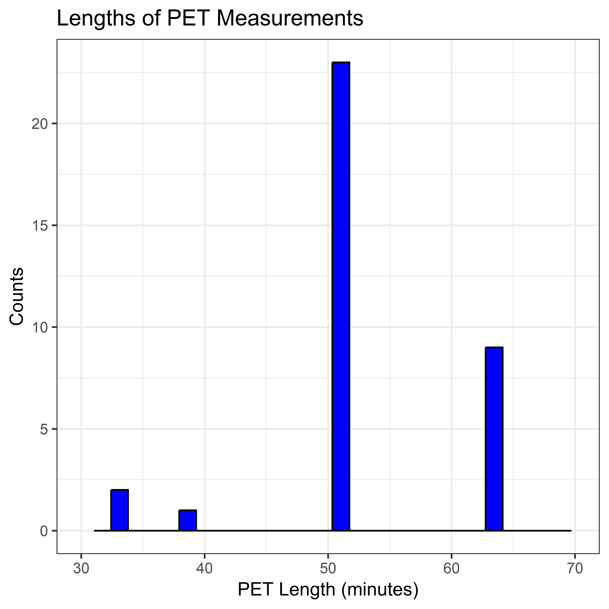
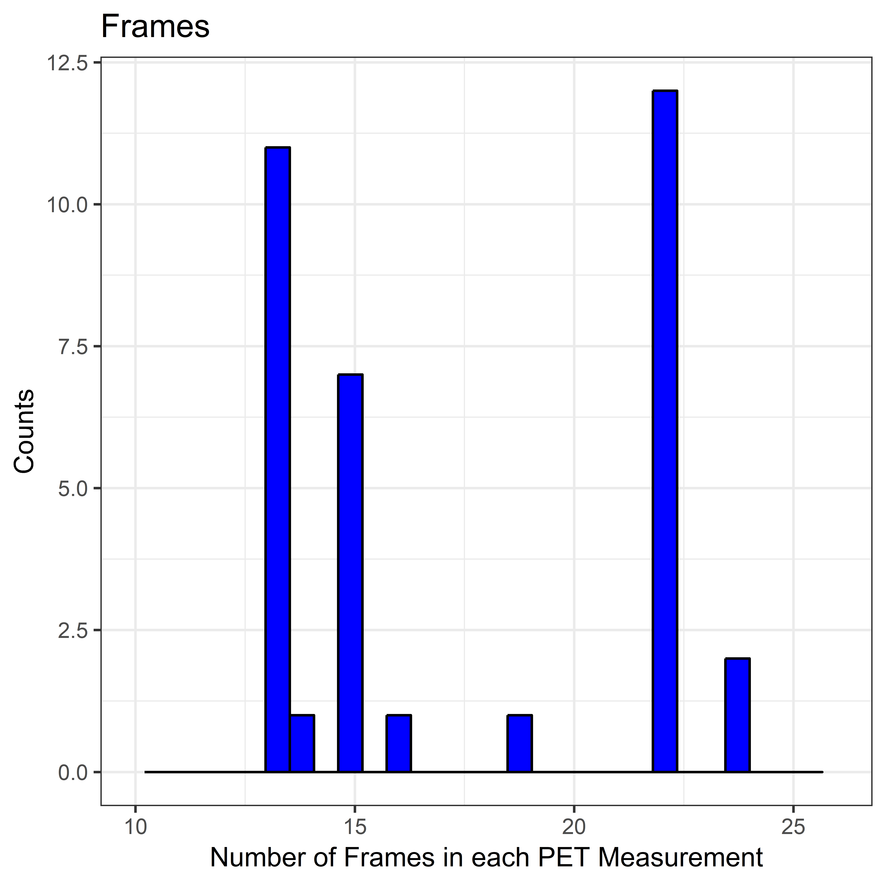
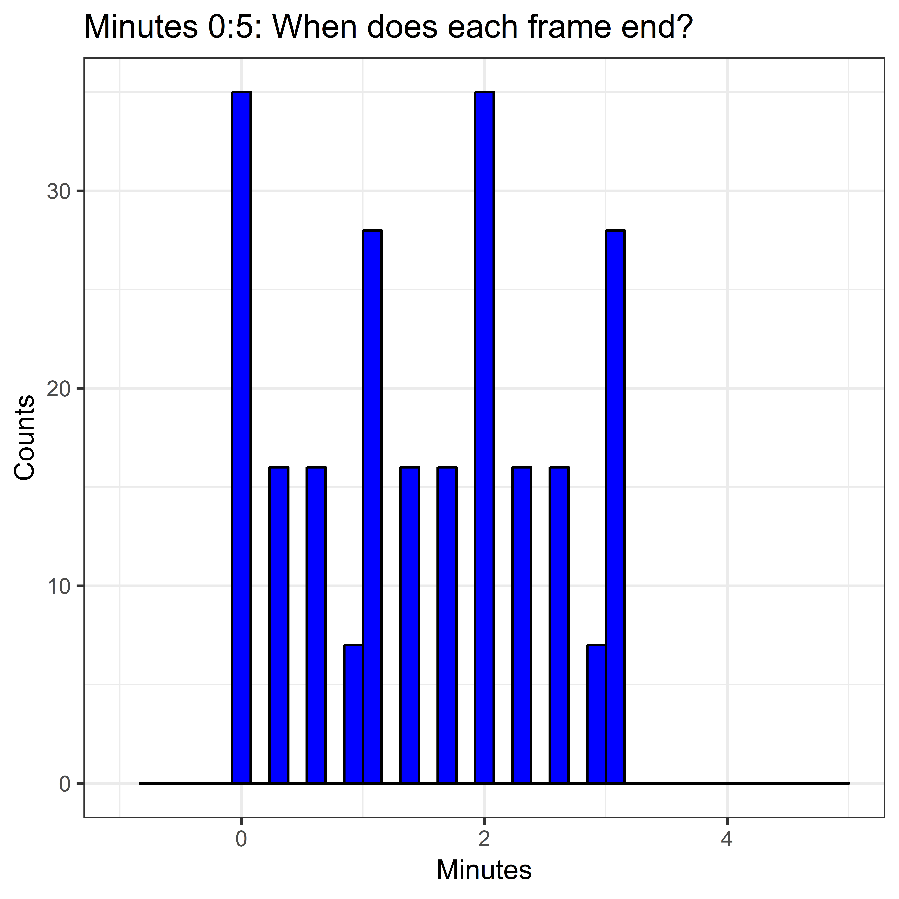
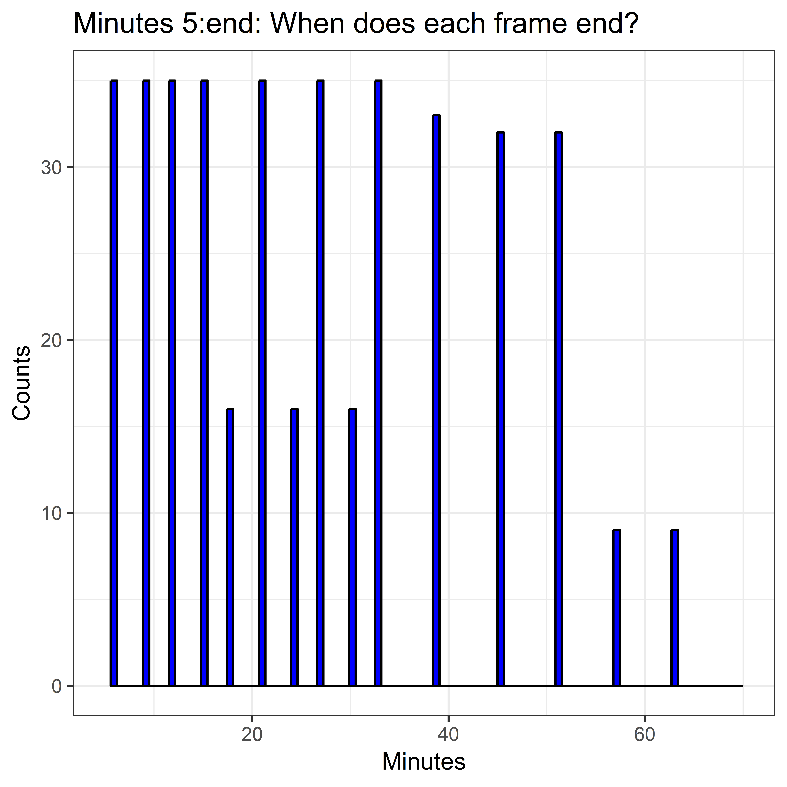

TAC Analysis
Aims
In this analysis, we aim to analyse the TAC data from the D1 schizophrenia control study.
The relevant issues which need to be confronted prior to analysis are:
- Different lengths of the PET measurements
- Different lengths of PET frames
The relevant concerns which need to be addressed during the analysis phase are:
- Time-stability of D1R BPND estimates
- Relevance of T1 and T2 MR measurements
- Relevance of having the neuroinsert
- Relevance of automatic and manual ROIs
Munging TACs
Libraries
# devtools::install_github('mathesong/kipettools')
# devtools::install_github("mathesong/kinfitr", ref="v0.2.0")
library(kipettools)
library(tidyverse)## -- Attaching packages ------------------------------------------------------------------------------------ tidyverse 1.2.1 --## v ggplot2 3.1.0 v purrr 0.3.0
## v tibble 2.0.1 v dplyr 0.8.0.1
## v tidyr 0.8.2 v stringr 1.4.0
## v readr 1.3.1 v forcats 0.4.0## Warning: package 'ggplot2' was built under R version 3.5.2## Warning: package 'tibble' was built under R version 3.5.2## Warning: package 'tidyr' was built under R version 3.5.1## Warning: package 'readr' was built under R version 3.5.2## Warning: package 'purrr' was built under R version 3.5.2## Warning: package 'dplyr' was built under R version 3.5.2## Warning: package 'stringr' was built under R version 3.5.2## Warning: package 'forcats' was built under R version 3.5.2## -- Conflicts --------------------------------------------------------------------------------------- tidyverse_conflicts() --
## x dplyr::filter() masks stats::filter()
## x dplyr::lag() masks stats::lag()library(kinfitr)
library(viridis)## Loading required package: viridisLitelibrary(knitr)
library(readxl)## Warning: package 'readxl' was built under R version 3.5.1library(broom)## Warning: package 'broom' was built under R version 3.5.2library(lubridate)##
## Attaching package: 'lubridate'## The following object is masked from 'package:base':
##
## datelibrary(corrplot)## corrplot 0.84 loadedlibrary(stringr)
library(ggbeeswarm)
library(R2jags)## Loading required package: rjags## Loading required package: coda## Linked to JAGS 4.2.0## Loaded modules: basemod,bugs##
## Attaching package: 'R2jags'## The following object is masked from 'package:coda':
##
## traceplotlibrary(polspline)
library(TOSTER)
library(compute.es)
source("residuals_for.R")We also use a script from StackOverflow
# From https://stackoverflow.com/questions/35717353/split-violin-plot-with-ggplot2
GeomSplitViolin <- ggproto("GeomSplitViolin", GeomViolin, draw_group = function(self, data, ..., draw_quantiles = NULL){
data <- transform(data, xminv = x - violinwidth * (x - xmin), xmaxv = x + violinwidth * (xmax - x))
grp <- data[1,'group']
newdata <- plyr::arrange(transform(data, x = if(grp%%2==1) xminv else xmaxv), if(grp%%2==1) y else -y)
newdata <- rbind(newdata[1, ], newdata, newdata[nrow(newdata), ], newdata[1, ])
newdata[c(1,nrow(newdata)-1,nrow(newdata)), 'x'] <- round(newdata[1, 'x'])
if (length(draw_quantiles) > 0 & !scales::zero_range(range(data$y))) {
stopifnot(all(draw_quantiles >= 0), all(draw_quantiles <=
1))
quantiles <- ggplot2:::create_quantile_segment_frame(data, draw_quantiles)
aesthetics <- data[rep(1, nrow(quantiles)), setdiff(names(data), c("x", "y")), drop = FALSE]
aesthetics$alpha <- rep(1, nrow(quantiles))
both <- cbind(quantiles, aesthetics)
quantile_grob <- GeomPath$draw_panel(both, ...)
ggplot2:::ggname("geom_split_violin", grid::grobTree(GeomPolygon$draw_panel(newdata, ...), quantile_grob))
}
else {
ggplot2:::ggname("geom_split_violin", GeomPolygon$draw_panel(newdata, ...))
}
})
geom_split_violin <- function (mapping = NULL, data = NULL, stat = "ydensity", position = "identity", ..., draw_quantiles = NULL, trim = TRUE, scale = "area", na.rm = FALSE, show.legend = NA, inherit.aes = TRUE) {
layer(data = data, mapping = mapping, stat = stat, geom = GeomSplitViolin, position = position, show.legend = show.legend, inherit.aes = inherit.aes, params = list(trim = trim, scale = scale, draw_quantiles = draw_quantiles, na.rm = na.rm, ...))
}Data
kfresults_files <- list.files(path = 'RawData/', pattern = 'kinfitresults.mat')
kfresults_paths <- list.files(path = 'RawData/', pattern = 'kinfitresults.mat', full.names = T)
alldata <- tibble(file = kfresults_files, path = kfresults_paths) %>%
group_by(path) %>%
mutate(tacdata = map(path, ~kipettools::kfresults_getData(.x)))
saveRDS(alldata, file = 'IntermediateData/alltacdata.rds')Extract from that data
alldata <- readRDS('IntermediateData/alltacdata.rds')
alldata <- alldata %>%
mutate(Subjname = map_chr(tacdata, 'Subjname'),
PETNo = map_dbl(tacdata, 'PETNo'),
alltacs = map(tacdata, 'tacdata'),
roisizes = map(tacdata, 'roisizes')) %>%
select(-tacdata)## Warning: Detecting old grouped_df format, replacing `vars` attribute by
## `groups`Now I’ve extracted all the elements into their own nested columns. We now wish to create weighted averages of the striatal ROIs to create a whole striatum ROI.
First I’ll define functions for extracting weighted averages, and for doing this for both of the ROIs that we want
# Generic combination
combine_tacs <- function(alltacs, roisizes, roinames) {
roinames <- roinames[order(roinames)]
alltacs <- select(alltacs, roinames)
roisizes <- filter(roisizes, ROI %in% roinames) %>%
arrange(ROI) %>%
mutate(ROI=as.character(ROI))
all_long <- alltacs %>%
mutate(frameNo = 1:n()) %>%
gather(key = 'ROI', value = 'Radioactivity', -frameNo) %>%
full_join(roisizes, by = 'ROI') %>%
mutate(weighted_val = Radioactivity * Volume) %>%
group_by(frameNo) %>%
summarise(outtac = sum(weighted_val) / sum(roisizes$Volume) )
pull(all_long, outtac)
}
# Specific computation
getROIs <- function(alltacs, roisizes) {
outdf <- select(alltacs, times, weights) %>%
mutate(STR = combine_tacs(alltacs, roisizes, c('CAU', 'PUT', 'VST') ),
DLPFC = combine_tacs(alltacs, roisizes, c('gmDLPF')),
CBL = combine_tacs(alltacs, roisizes, c('CER')) )
return(outdf)
}
# modeldata <- alldata %>%
# mutate(finaltacs = map2(alltacs, roisizes, ~getROIs(.x, .y)))So this last call doesn’t work, because the DLPFC is sometimes called DLPF and sometimes DLPC. Let’s just fix this.
for( i in 1:nrow(alldata)) {
# roisizes
alldata$roisizes[[i]]$ROI <- as.character(alldata$roisizes[[i]]$ROI)
alldata$roisizes[[i]]$ROI[alldata$roisizes[[i]]$ROI=='gmDLPC'] = 'gmDLPFC'
alldata$roisizes[[i]]$ROI[alldata$roisizes[[i]]$ROI=='gmDLPF'] = 'gmDLPFC'
# tacdata
names(alldata$alltacs[[i]])[names(alldata$alltacs[[i]])=='gmDLPC'] = 'gmDLPFC'
names(alldata$alltacs[[i]])[names(alldata$alltacs[[i]])=='gmDLPF'] = 'gmDLPFC'
}Ok, now let’s fix up that last function
getROIs <- function(alltacs, roisizes) {
outdf <- select(alltacs, times, weights, durations) %>%
mutate(STR = combine_tacs(alltacs, roisizes, c('CAU', 'PUT', 'VST') ),
DLPFC = combine_tacs(alltacs, roisizes, c('gmDLPFC')), # Now using DLPFC
CBL = combine_tacs(alltacs, roisizes, c('CER')),
fslSTR = combine_tacs(alltacs, roisizes, c('fslSTR')),
fslDLPFC = combine_tacs(alltacs, roisizes, c('fslMFG')),
fslCBL = combine_tacs(alltacs, roisizes, c('RefCBL')) )
return(outdf)
}
modeldata <- alldata %>%
mutate(finaltacs = map2(alltacs, roisizes, ~getROIs(.x, .y))) %>%
select(path, Subjname, PETNo, tacs = finaltacs) %>%
mutate(Subjname = stringr::str_replace(Subjname, 'D1-schiz_', ''))Removing frames without participants
Two participants left the camera early. However, the frames after they’d left are still included. Let’s remove these.
modeldata_unnested <- unnest(modeldata) %>%
group_by(path) %>%
mutate(cumTime = cumsum(durations),
startTime = times - (durations/2))
# This code below is hardcoded to remove the acronyms from the shared code
subj1_out <- 41:43
subj2_out <- 387:389
modeldata_unnested <- modeldata_unnested[-c(subj1_out, subj2_out),]
modeldata <- modeldata_unnested %>%
select(-cumTime, -startTime) %>%
group_by(path, Subjname, PETNo) %>%
nest(.key = 'tacs')Now let’s just split this up into separate data frames for all ROIs and only manual ROIs so that we don’t always have to filter out the automated ROIs.
modeldata_manauto <- modeldata
modeldata <- unnest(modeldata) %>%
select(-starts_with('fsl')) %>%
group_by(path, Subjname, PETNo) %>%
nest(.key = 'tacs')Exploring the Frame Properties of the TACs
modeldata <- modeldata %>%
mutate(measLength = map_dbl(tacs, ~sum(.$durations)),
frames = map_dbl(tacs, ~nrow(.x)-1) )
kable(table(round(modeldata$measLength)), col.names = c("Measurement Length", "Frequency"))| Measurement Length | Frequency |
|---|---|
| 33 | 2 |
| 39 | 1 |
| 51 | 23 |
| 63 | 9 |
ggplot(modeldata, aes(x=measLength)) +
geom_histogram(colour='black', fill='blue') +
theme_bw() +
labs(x='PET Length (minutes)',
y='Counts',
title='Lengths of PET Measurements') +
xlim(c(30, 70))## Warning: Removed 2 rows containing missing values (geom_bar).
ggplot(modeldata, aes(x=frames)) +
geom_histogram(colour='black', fill='blue') +
theme_bw() +
labs(x='Number of Frames in each PET Measurement',
y='Counts',
title='Frames') +
xlim(c(10, 26))## Warning: Removed 2 rows containing missing values (geom_bar).
frameData <- modeldata %>%
unnest() %>%
mutate(endTime = times + durations/2)
ggplot(frameData, aes(x=endTime)) +
geom_histogram(colour='black', fill='blue', bins = 40) +
theme_bw() +
labs(x='Minutes',
y='Counts',
title='Minutes 0:5: When does each frame end?') +
xlim(c(-1,5))## Warning: Removed 408 rows containing non-finite values (stat_bin).## Warning: Removed 1 rows containing missing values (geom_bar).
ggplot(frameData, aes(x=endTime)) +
geom_histogram(colour='black', fill='blue', bins = 100) +
theme_bw() +
labs(x='Minutes',
y='Counts',
title='Minutes 5:end: When does each frame end?') +
xlim(c(5, 70))## Warning: Removed 236 rows containing non-finite values (stat_bin).## Warning: Removed 2 rows containing missing values (geom_bar).
Are the different TAC lengths a problem? Time Stability analysis
Long measurements
Let’s first look at only the longest measurements
longmeasurements <- modeldata %>%
filter(measLength > 60)
time_stability <- function(tacs, roiname, minlength) {
tacs$cumtime <- cumsum(tacs$durations)
out <- tibble(PETlength = tacs$cumtime) %>%
mutate(frameNo = 1:n()) %>%
filter(PETlength > minlength) %>%
group_by(frameNo) %>%
mutate(bp = map_dbl(frameNo,
~srtm(t_tac = tacs$times,
reftac = tacs$CBL,
roitac = tacs[[roiname]],
weights = tacs$weights,
frameStartEnd = c(1,.x))$par$bp, tacs=tacs)) %>%
ungroup() %>%
select(-frameNo) %>%
mutate(ROI = roiname)
return(out)
}
ts_data <- longmeasurements %>%
group_by(path) %>%
mutate(str_ts = map(tacs, ~time_stability(.x, 'STR', 20))) %>%
mutate(dlpfc_ts = map(tacs, ~time_stability(.x, 'DLPFC', 20))) %>%
mutate(all_ts = map2(str_ts, dlpfc_ts, ~rbind(.x, .y))) %>%
select(-str_ts, -dlpfc_ts, -tacs) %>%
unnest() %>%
ungroup()
totbp <- ts_data %>%
filter( round(PETlength) == 63) %>%
rename(totbp = bp) %>%
select(-PETlength)
midbp <- ts_data %>%
filter( round(PETlength) == 51) %>%
rename(midbp = bp) %>%
select(-PETlength)
ts_analysis <- full_join(ts_data, totbp) %>%
full_join(midbp) %>%
mutate(totperc_bp = bp/totbp,
midperc_bp = bp/midbp)## Joining, by = c("path", "Subjname", "PETNo", "measLength", "frames", "ROI")
## Joining, by = c("path", "Subjname", "PETNo", "measLength", "frames", "ROI")And let’s plot that
ggplot(ts_analysis, aes(x=PETlength, y=totperc_bp, colour=Subjname)) +
geom_point() +
geom_line() +
theme_bw() +
geom_hline(yintercept=1, linetype="dashed") +
labs(x = 'Measurement Length (minutes)',
y = expression(paste("Proportional ", BP[ND], sep = "")),
title='Time Stability Analysis relative to 63 minutes') +
facet_grid(ROI~., scales="free_y") +
guides(colour=FALSE, fill=FALSE) +
coord_cartesian(ylim = c(0.8, 1.4))
ggplot(ts_analysis, aes(x=PETlength, y=midperc_bp, colour=Subjname)) +
geom_point() +
geom_line() +
theme_bw() +
geom_hline(yintercept=1, linetype="dashed") +
labs(x = 'Measurement Length (minutes)',
y = expression(paste("Proportional ", BP[ND], sep = "")),
title='Time Stability Analysis relative to 51 minutes') +
facet_grid(ROI~.) +
guides(colour=FALSE, fill=FALSE) +
coord_cartesian(ylim = c(0.8, 1.4))
Conclusions here:
- SCH23390 is not time-stable
- If we use the full length, we will be biased for many measures which were not so long
- We have at least 51 minutes of acquisition for all individuals except one
- We also have a time frame which ends at 51 minutes for all individuals except one
- The only individual with the short acquisition has 33 minutes
- This is associated with a bias of around about +5%
- Losing an additional participant is probably worse. Let’s instead model the average change and use that for the BPND value.
51 Minute Data
Now we use all the data for which we have a full 51 minutes
midmeasurements <- modeldata %>%
filter(measLength > 50)
ts_data_mid <- midmeasurements %>%
group_by(path) %>%
mutate(str_ts = map(tacs, ~time_stability(.x, 'STR', 25))) %>%
mutate(dlpfc_ts = map(tacs, ~time_stability(.x, 'DLPFC', 25))) %>%
mutate(all_ts = map2(str_ts, dlpfc_ts, ~rbind(.x, .y))) %>%
select(-str_ts, -dlpfc_ts, -tacs) %>%
unnest() %>%
ungroup()
midbp <- ts_data_mid %>%
filter( round(PETlength) == 51) %>%
rename(midbp = bp) %>%
select(-PETlength)
ts_analysis_mid <- full_join(ts_data_mid, midbp) %>%
mutate(midperc_bp = bp/midbp) %>%
filter( PETlength < 52)## Joining, by = c("path", "Subjname", "PETNo", "measLength", "frames", "ROI")And let’s plot that
tsplot <- ggplot(ts_analysis_mid, aes(x=PETlength, y=midperc_bp)) +
geom_point(aes(colour=Subjname)) +
geom_line(aes(colour=Subjname)) +
theme_bw() +
geom_hline(yintercept=1, linetype="dashed") +
labs(x = 'Measurement Length (minutes)',
y = expression(paste("Proportional ", BP[ND], sep = "")),
title='Time Stability Analysis relative to 51 minutes') +
facet_grid(ROI~.) +
guides(colour=FALSE, fill=FALSE) +
coord_cartesian(ylim = c(0.8, 1.4))
tsplot
ggsave(filename = "Figures/tsplot.jpg", tsplot)## Saving 8 x 8 in imageAnd summary statistics
ts_analysis_mid_summary <- ts_analysis_mid %>%
mutate(PETlength = round(PETlength)) %>%
group_by(PETlength, ROI) %>%
summarise(mean_percdif = mean(midperc_bp),
sd_percdif = sd(midperc_bp),
mean_bp = mean(bp),
sd_bp = sd(bp),
n = n()) %>%
filter(n == 32) %>%
arrange(ROI, PETlength)
knitr::kable(ts_analysis_mid_summary, digits=3)| PETlength | ROI | mean_percdif | sd_percdif | mean_bp | sd_bp | n |
|---|---|---|---|---|---|---|
| 27 | DLPFC | 1.078 | 0.115 | 0.334 | 0.087 | 32 |
| 33 | DLPFC | 1.035 | 0.051 | 0.320 | 0.079 | 32 |
| 39 | DLPFC | 1.024 | 0.030 | 0.317 | 0.079 | 32 |
| 45 | DLPFC | 1.011 | 0.022 | 0.313 | 0.078 | 32 |
| 51 | DLPFC | 1.000 | 0.000 | 0.309 | 0.076 | 32 |
| 27 | STR | 1.087 | 0.101 | 1.715 | 0.267 | 32 |
| 33 | STR | 1.052 | 0.078 | 1.661 | 0.251 | 32 |
| 39 | STR | 1.035 | 0.037 | 1.635 | 0.241 | 32 |
| 45 | STR | 1.019 | 0.017 | 1.611 | 0.236 | 32 |
| 51 | STR | 1.000 | 0.000 | 1.582 | 0.233 | 32 |
Variance across time ranges
We have shown that there is bias across the time range relative to both 51 and 63 minutes. We can either correct the estimated bias in the BPND of shorter PET measurements, or else we could possibly just restrict analysis of all PET meausurements to shorter periods. To assess the feasibility of this decision, we can examine the standard deviation of BPND values across time.
ts_analysis_mid %>%
arrange(PETlength) %>%
mutate(PETlength = round(PETlength)) %>%
filter(PETlength != 30) %>% # From above, we see that there are fewer PET measurements with 30 minute ends
ggplot(aes(x=PETlength, y=bp)) +
geom_point(aes(colour=PETlength)) +
geom_violin(aes(x=PETlength, group=factor(PETlength), colour=PETlength, fill=PETlength),
width=2, alpha=0.25) +
facet_grid(ROI ~ ., scale='free_y') +
scale_colour_viridis(option = 'B') +
scale_fill_viridis(option = 'B')
This is not so clear. We can instead plot the SD across the range directly.
ts_analysis_mid_summary %>%
filter(PETlength != 30) %>% # From above, we see that there are fewer PET measurements with 30 minute ends
ggplot(aes(x=PETlength, y=sd_bp)) +
geom_point() +
geom_line() +
facet_grid(ROI ~ ., scale='free_y') +
theme_bw()
We therefore conclude that longer measurements are preferable as they show diminished variability. The best solution is therefore to correct the shorter measurements for potential bias to what they might have been if they had been measured for the whole 51 minutes.
Binding potential analysis
Preparing the long data
modeldata_long <- unnest(modeldata) %>%
ungroup(modeldata) %>%
mutate(frameEnd = times+durations/2) %>%
filter(frameEnd < 52) %>%
gather(key = 'ROI', value = 'Radioactivity', -path, -Subjname,
-PETNo, -measLength, -frames, -times, -CBL,
-weights, -durations, -frameEnd) %>%
arrange(Subjname, PETNo, times) %>%
group_by(path, Subjname, PETNo, measLength, frames, ROI) %>%
nest(.key = 'tacs')Calculating BPND values
modeldata_long <- modeldata_long %>%
group_by(path) %>%
mutate(srtmout = map(tacs, ~srtm(t_tac = .x$times,
reftac = .x$CBL,
roitac = .x$Radioactivity,
weights = .x$weights)),
srtm_bp = map_dbl(srtmout, c('par', 'bp')))and checking for outliers
ggplot(modeldata_long, aes(x=srtm_bp)) +
geom_histogram(colour='black', fill='blue', bins = 20) +
geom_density(colour="red", size=2) +
facet_grid(.~ROI, scale='free_x')
These look pretty good, and the distributions look approximately normal.
Let’s plot the highest and lowest BPND value TACs to see that they look ok.
hilo_dat <- modeldata_long %>%
ungroup() %>%
group_by(ROI) %>%
filter(srtm_bp == max(srtm_bp) | srtm_bp == min(srtm_bp)) %>%
ungroup() %>%
arrange(srtm_bp)
hilo_fits <- map2(hilo_dat$srtmout, hilo_dat$ROI,
~plot_kinfit(.x, roiname=.y))
hilo_fits## [[1]]
##
## [[2]]
##
## [[3]]
##
## [[4]]
The fits look good. All of the fits will be shown at the end.
For robustness, let’s compare the BPND values to those estimated using a linear method. We’ll use MRTM1 and MRTM2. MRTM1 will be used to assess k2prime, and MRTM2 will be used to assess BPND.
modeldata_long <- modeldata_long %>%
group_by(path) %>%
mutate(mrtm1out = map(tacs, ~mrtm1(t_tac = .x$times,
reftac = .x$CBL,
roitac = .x$Radioactivity,
weights = .x$weights)),
mrtm1_k2prime = map_dbl(mrtm1out, c('par', 'k2prime'))) %>%
mutate(mrtm2out = map2(tacs, mrtm1_k2prime, ~mrtm2(t_tac = .x$times,
reftac = .x$CBL,
roitac = .x$Radioactivity,
weights = .x$weights,
k2prime = .y)),
mrtm2_bp = map_dbl(mrtm2out, c('par', 'bp')))Now let’s assess the relation between the BPND outcomes from these two measures
modeldata_long %>%
group_by(ROI) %>%
summarise(R2 = cor(srtm_bp, mrtm2_bp)^2) %>%
knitr::kable(digits=4)| ROI | R2 |
|---|---|
| DLPFC | 0.9996 |
| STR | 0.9997 |
That’s a pretty good correspondence. I think we can rest assured that the modelling has gone acceptably.
Correcting for bias
Now we wish to create new BPND values for those individuals whose measurements were shorter.
bp_data <- modeldata_long %>%
ungroup() %>%
mutate(measLength = map_dbl(tacs, ~round(sum(.$durations))),
frames = map_dbl(tacs, ~nrow(.x)-1) ) %>%
select(Subjname, PETNo, ROI, measLength, frames, rawbp = srtm_bp) %>%
left_join(select(ts_analysis_mid_summary,
measLength=PETlength, ROI, mean_percdif)) %>%
mutate(bp = rawbp/mean_percdif)## Joining, by = c("ROI", "measLength")Combining the TAC data with the metadata
Reading in the file
demographics <- read_excel('RawData/D1 schiz demographics.xlsx') %>%
select(id, CtrPat = `ctr/pat`, Age =`Age (yr)`, `PET date`, MBq, ecat=`ecat6 / ecat7 file`,
NeuroInsert=`Neuro-incert`, PET2D3D=`2D/3D`, rzfilter_res=`r-z filter resolution`,
filtercutoff_freq = `Filter cutoff frequency`, MRI, Sex=`m/f`,
pairNo = `h#/p#`, Occ_calibration) %>%
filter(!is.na( CtrPat)) %>%
mutate(Subjname = stringr::str_replace(id, '[0-9]', '')) %>%
mutate(pairNo = as.numeric(stringr::str_replace(pairNo, '[hp]', '')))There are hidden rows in the sheet which mess things up. Had to filter by missing values in CtrPat to fix this.
And combining with the bp data
bp_data <- left_join(bp_data, demographics) %>%
mutate(bp = bp/Occ_calibration) # Calibration for potential occupancy for one individual## Joining, by = "Subjname"Potential confounder effects
Let’s first define a function for the tests
t_test <- function(df, IV, DV='bp', mu = 0, alt = "two.sided", paired = F, conf.level = .95) {
vals <- unique(df[[IV]])
if(length(vals) != 2) stop('incorrect number of IV options')
group1 <- df[ df[[IV]]==vals[1], ][[DV]]
group2 <- df[ df[[IV]]==vals[2], ][[DV]]
tidy(t.test(x=group1, y=group2,
mu = mu,
alternative = alt,
paired = paired,
conf.level = conf.level)) %>%
select(estimate:statistic, parameter, p.value, method)
}
powerTOSTtwo(0.05, 0.8, N=18)## The equivalence bounds to achieve 80 % power with N = 18 are -0.98 and 0.98 .## ## [1] -0.9754684 0.9754684tost_test <- function(df, IV, DV='bp', lobound=-.98, hibound=.98) {
vals <- unique(df[[IV]])
group1 <- df[ df[[IV]]==vals[1], ][[DV]]
group2 <- df[ df[[IV]]==vals[2], ][[DV]]
n1 = length(group1)
n2 = length(group2)
m1 <- mean(group1)
m2 <- mean(group2)
sd1 <- sd(group1)
sd2 <- sd(group2)
capture.output( tostout <- TOSTtwo(m1,m2,sd1,sd2,n1,n2,low_eqbound_d=lobound,high_eqbound_d=hibound) )
output <- tibble(diff = tostout$diff, tost_p.value = max( c(tostout$TOST_p1, tostout$TOST_p2)) )
return(output)
}Biological confounders
The main two biological confounders here are likely to be age and sex. Age is known to influence D1R availability, and sex affects availability of many different tracers. Let’s assess these first.
Age at PET
Age is known to be associated with D1R BPND. Do we find this in this data set?
ggplot(bp_data, aes(x=Age, y=bp)) +
geom_point() +
geom_smooth(method="lm") +
facet_grid(ROI~., scales='free_y') +
labs(x='Age', y=expression(BP[ND])) +
theme_bw()
There is a clear association between Age and D1R BPND. This may need to be accounted for in a model.
Sex
bp_data <- bp_data %>%
mutate(Sex = ifelse(Sex=="m", "Male", "Female"))
ggplot(bp_data, aes(x=factor(Sex), y=bp, colour=factor(Sex), fill=factor(Sex))) +
geom_violin(alpha=0.25) +
geom_point() +
facet_grid(ROI~., scales='free_y') +
scale_colour_discrete('Sex') +
scale_fill_discrete('Sex') +
labs(x='Sex', y=expression(BP[ND]))
bp_data %>%
group_by(ROI) %>%
nest() %>%
mutate(comparison = map(data, ~t_test(df=.x, IV='Sex') ) ) %>%
pull(comparison) %>%
do.call(rbind,.) %>%
kable(digits=3)| estimate | estimate1 | estimate2 | statistic | parameter | p.value | method |
|---|---|---|---|---|---|---|
| 0.198 | 1.641 | 1.443 | 3.354 | 32.214 | 0.002 | Welch Two Sample t-test |
| 0.053 | 0.325 | 0.272 | 2.493 | 32.403 | 0.018 | Welch Two Sample t-test |
bp_data %>%
group_by(ROI) %>%
nest() %>%
mutate(comparison = map(data, ~tost_test(df=.x, IV='Sex') ) ) %>%
select(ROI, comparison) %>%
unnest() %>%
kable(digits=3)## ## 
## 
| ROI | diff | tost_p.value |
|---|---|---|
| STR | 0.198 | 0.595 |
| DLPFC | 0.053 | 0.311 |
These two do appear to differ from one another, and there is also a significant difference between them. This may need to be accounted for in a model.
It is possible that these changes are accounted for by differences in age. We can test this by examining the distribution of age in both samples
bp_data %>%
filter(ROI=='DLPFC') %>%
ggplot(aes(x=Sex, y=Age, colour=bp)) +
geom_violin() +
geom_point() +
scale_colour_viridis()
bp_data %>%
filter(ROI=='DLPFC') %>%
nest() %>%
mutate(comparison = map(data, ~t_test(df=.x, IV='Sex', DV='Age') ) ) %>%
pull(comparison) %>%
do.call(rbind,.) %>%
kable(digits=3)| estimate | estimate1 | estimate2 | statistic | parameter | p.value | method |
|---|---|---|---|---|---|---|
| -3.46 | 29.299 | 32.76 | -0.996 | 17.49 | 0.333 | Welch Two Sample t-test |
This does not appear to be the case: there does not appear to be a difference in age. It does, however, appear that there could be an interaction of age and sex.
bp_data %>%
ggplot(aes(x=Age, y=bp, colour=Sex)) +
geom_point() +
geom_smooth(method="lm") +
facet_grid(ROI~., scales='free_y') +
labs(y=expression(BP[ND]))
agesex_model <- function(df) {
out <- lm(bp ~ Age + Sex, data=df)
return(out)
}
agesexitx_model <- function(df) {
out <- lm(bp ~ Age + Sex + Age:Sex, data=df)
return(out)
}
agesex_fits <- bp_data %>%
group_by(ROI) %>%
nest() %>%
mutate(agesex = map(data, ~agesex_model(.x))) %>%
mutate(agesex_itx = map(data, ~agesexitx_model(.x)))
print(paste0('Region: ', agesex_fits$ROI[1]))## [1] "Region: STR"summary(agesex_fits$agesex[[1]])##
## Call:
## lm(formula = bp ~ Age + Sex, data = df)
##
## Residuals:
## Min 1Q Median 3Q Max
## -0.26978 -0.14110 -0.01712 0.10384 0.34771
##
## Coefficients:
## Estimate Std. Error t value Pr(>|t|)
## (Intercept) 1.87559 0.12281 15.272 3e-16 ***
## Age -0.01321 0.00342 -3.862 0.000515 ***
## SexMale 0.15238 0.06321 2.411 0.021840 *
## ---
## Signif. codes: 0 '***' 0.001 '**' 0.01 '*' 0.05 '.' 0.1 ' ' 1
##
## Residual standard error: 0.1744 on 32 degrees of freedom
## Multiple R-squared: 0.4395, Adjusted R-squared: 0.4045
## F-statistic: 12.55 on 2 and 32 DF, p-value: 9.488e-05print(paste0('Region: ', agesex_fits$ROI[2]))## [1] "Region: DLPFC"summary(agesex_fits$agesex[[2]])##
## Call:
## lm(formula = bp ~ Age + Sex, data = df)
##
## Residuals:
## Min 1Q Median 3Q Max
## -0.083667 -0.042806 -0.000916 0.030043 0.145660
##
## Coefficients:
## Estimate Std. Error t value Pr(>|t|)
## (Intercept) 0.434305 0.038673 11.230 1.23e-12 ***
## Age -0.004942 0.001077 -4.590 6.52e-05 ***
## SexMale 0.035644 0.019904 1.791 0.0828 .
## ---
## Signif. codes: 0 '***' 0.001 '**' 0.01 '*' 0.05 '.' 0.1 ' ' 1
##
## Residual standard error: 0.05491 on 32 degrees of freedom
## Multiple R-squared: 0.4697, Adjusted R-squared: 0.4366
## F-statistic: 14.17 on 2 and 32 DF, p-value: 3.912e-05kable(tidy(agesex_fits$agesex[[2]]), digits=3)| term | estimate | std.error | statistic | p.value |
|---|---|---|---|---|
| (Intercept) | 0.434 | 0.039 | 11.230 | 0.000 |
| Age | -0.005 | 0.001 | -4.590 | 0.000 |
| SexMale | 0.036 | 0.020 | 1.791 | 0.083 |
print(paste0('Region: ', agesex_fits$ROI[1]))## [1] "Region: STR"summary(agesex_fits$agesex_itx[[1]])##
## Call:
## lm(formula = bp ~ Age + Sex + Age:Sex, data = df)
##
## Residuals:
## Min 1Q Median 3Q Max
## -0.28696 -0.10748 -0.00133 0.11137 0.39036
##
## Coefficients:
## Estimate Std. Error t value Pr(>|t|)
## (Intercept) 1.577914 0.154330 10.224 1.88e-11 ***
## Age -0.004120 0.004500 -0.916 0.36688
## SexMale 0.692379 0.201810 3.431 0.00172 **
## Age:SexMale -0.017357 0.006219 -2.791 0.00891 **
## ---
## Signif. codes: 0 '***' 0.001 '**' 0.01 '*' 0.05 '.' 0.1 ' ' 1
##
## Residual standard error: 0.1584 on 31 degrees of freedom
## Multiple R-squared: 0.5521, Adjusted R-squared: 0.5087
## F-statistic: 12.74 on 3 and 31 DF, p-value: 1.358e-05kable(tidy(agesex_fits$agesex_itx[[1]]), digits=3)| term | estimate | std.error | statistic | p.value |
|---|---|---|---|---|
| (Intercept) | 1.578 | 0.154 | 10.224 | 0.000 |
| Age | -0.004 | 0.004 | -0.916 | 0.367 |
| SexMale | 0.692 | 0.202 | 3.431 | 0.002 |
| Age:SexMale | -0.017 | 0.006 | -2.791 | 0.009 |
print(paste0('Region: ', agesex_fits$ROI[2]))## [1] "Region: DLPFC"summary(agesex_fits$agesex_itx[[2]])##
## Call:
## lm(formula = bp ~ Age + Sex + Age:Sex, data = df)
##
## Residuals:
## Min 1Q Median 3Q Max
## -0.095075 -0.028708 -0.000733 0.027616 0.131117
##
## Coefficients:
## Estimate Std. Error t value Pr(>|t|)
## (Intercept) 0.346222 0.049305 7.022 6.97e-08 ***
## Age -0.002253 0.001438 -1.568 0.12712
## SexMale 0.195432 0.064474 3.031 0.00489 **
## Age:SexMale -0.005136 0.001987 -2.585 0.01466 *
## ---
## Signif. codes: 0 '***' 0.001 '**' 0.01 '*' 0.05 '.' 0.1 ' ' 1
##
## Residual standard error: 0.0506 on 31 degrees of freedom
## Multiple R-squared: 0.5637, Adjusted R-squared: 0.5215
## F-statistic: 13.35 on 3 and 31 DF, p-value: 9.105e-06kable(tidy(agesex_fits$agesex_itx[[2]]), digits=3)| term | estimate | std.error | statistic | p.value |
|---|---|---|---|---|
| (Intercept) | 0.346 | 0.049 | 7.022 | 0.000 |
| Age | -0.002 | 0.001 | -1.568 | 0.127 |
| SexMale | 0.195 | 0.064 | 3.031 | 0.005 |
| Age:SexMale | -0.005 | 0.002 | -2.585 | 0.015 |
Including both main effects and an interaction in the final model is likely to present some issues for the power of the study for assessing patient status. Let’s aim for including age and sex in a potential final model, and we can consider the interaction term at a later point.
R-Z Filter
Resolution
ggplot(bp_data, aes(x=factor(rzfilter_res), y=bp, colour=factor(rzfilter_res), fill=factor(rzfilter_res))) +
geom_violin(alpha=0.25) +
geom_point() +
facet_grid(ROI~., scales='free_y') +
scale_colour_discrete('R-Z Filter Resolution') +
scale_fill_discrete('R-Z Filter Resolution') +
labs(x='R-Z Filter Resolution', y=expression(BP[ND]))
bp_data %>%
group_by(ROI) %>%
nest() %>%
mutate(comparison = map(data, ~t_test(df=.x, IV='rzfilter_res') ) ) %>%
select(ROI, comparison) %>%
unnest() %>%
kable(digits=3)| ROI | estimate | estimate1 | estimate2 | statistic | parameter | p.value | method |
|---|---|---|---|---|---|---|---|
| STR | 0.044 | 1.593 | 1.549 | 0.559 | 29.428 | 0.581 | Welch Two Sample t-test |
| DLPFC | 0.010 | 0.312 | 0.302 | 0.378 | 25.568 | 0.709 | Welch Two Sample t-test |
bp_data %>%
group_by(ROI) %>%
nest() %>%
mutate(comparison = map(data, ~tost_test(df=.x, IV='rzfilter_res') ) ) %>%
select(ROI, comparison) %>%
unnest() %>%
kable(digits=3)## ## 
## 
| ROI | diff | tost_p.value |
|---|---|---|
| STR | 0.044 | 0.014 |
| DLPFC | 0.010 | 0.010 |
Cutoff
ggplot(bp_data, aes(x=factor(filtercutoff_freq), y=bp, colour=factor(filtercutoff_freq), fill=factor(filtercutoff_freq))) +
geom_violin(alpha=0.25) +
geom_point() +
facet_grid(ROI~., scales='free_y') +
scale_colour_discrete('R-Z Filter Cutoff') +
scale_fill_discrete('R-Z Filter Cutoff') +
labs(x='R-Z Filter Cutoff', y=expression(BP[ND]))
bp_data %>%
group_by(ROI) %>%
nest() %>%
mutate(comparison = map(data, ~t_test(df=.x, IV='filtercutoff_freq') ) ) %>%
select(ROI, comparison) %>%
unnest() %>%
kable(digits=3)| ROI | estimate | estimate1 | estimate2 | statistic | parameter | p.value | method |
|---|---|---|---|---|---|---|---|
| STR | -0.033 | 1.571 | 1.605 | -0.118 | 1.038 | 0.925 | Welch Two Sample t-test |
| DLPFC | -0.047 | 0.304 | 0.352 | -0.686 | 1.071 | 0.611 | Welch Two Sample t-test |
bp_data %>%
group_by(ROI) %>%
nest() %>%
mutate(comparison = map(data, ~tost_test(df=.x, IV='filtercutoff_freq') ) ) %>%
select(ROI, comparison) %>%
unnest() %>%
kable(digits=3)## ## 
## 
| ROI | diff | tost_p.value |
|---|---|---|
| STR | -0.033 | 0.249 |
| DLPFC | -0.047 | 0.344 |
ECAT file format
ggplot(bp_data, aes(x=factor(ecat), y=bp, colour=factor(ecat), fill=factor(ecat))) +
geom_violin(alpha=0.25) +
geom_point() +
facet_grid(ROI~., scales='free_y') +
scale_colour_discrete('ecat file format') +
scale_fill_discrete('ecat file format') +
labs(x='ecat file format', y=expression(BP[ND]))
bp_data %>%
group_by(ROI) %>%
nest() %>%
mutate(comparison = map(data, ~t_test(df=.x, IV='ecat') ) ) %>%
select(ROI, comparison) %>%
unnest() %>%
kable(digits=3)| ROI | estimate | estimate1 | estimate2 | statistic | parameter | p.value | method |
|---|---|---|---|---|---|---|---|
| STR | 0.037 | 1.592 | 1.555 | 0.477 | 32.255 | 0.637 | Welch Two Sample t-test |
| DLPFC | 0.004 | 0.309 | 0.305 | 0.153 | 30.587 | 0.880 | Welch Two Sample t-test |
bp_data %>%
group_by(ROI) %>%
nest() %>%
mutate(comparison = map(data, ~tost_test(df=.x, IV='ecat') ) ) %>%
select(ROI, comparison) %>%
unnest() %>%
kable(digits=3)## ## 
## 
| ROI | diff | tost_p.value |
|---|---|---|
| STR | 0.037 | 0.010 |
| DLPFC | 0.004 | 0.005 |
PET 2D vs 3D
ggplot(bp_data, aes(x=factor(PET2D3D), y=bp, colour=factor(PET2D3D), fill=factor(PET2D3D))) +
geom_violin(alpha=0.25) +
geom_point() +
facet_grid(ROI~., scales='free_y') +
scale_colour_discrete('2D vs 3D PET') +
scale_fill_discrete('2D vs 3D PET') +
labs(x='2D vs 3D PET', y=expression(BP[ND]))
bp_data %>%
group_by(ROI) %>%
nest() %>%
mutate(comparison = map(data, ~t_test(df=.x, IV='PET2D3D') ) ) %>%
select(ROI, comparison) %>%
unnest() %>%
kable(digits=3)| ROI | estimate | estimate1 | estimate2 | statistic | parameter | p.value | method |
|---|---|---|---|---|---|---|---|
| STR | 0.082 | 1.578 | 1.495 | 2.019 | 32.892 | 0.052 | Welch Two Sample t-test |
| DLPFC | 0.044 | 0.310 | 0.265 | 1.587 | 1.626 | 0.280 | Welch Two Sample t-test |
bp_data %>%
group_by(ROI) %>%
nest() %>%
mutate(comparison = map(data, ~tost_test(df=.x, IV='PET2D3D') ) ) %>%
select(ROI, comparison) %>%
unnest() %>%
kable(digits=3)## ## 
## 
| ROI | diff | tost_p.value |
|---|---|---|
| STR | 0.082 | 0.032 |
| DLPFC | 0.044 | 0.350 |
These two may differ, but we don’t have enough information to tell. It certainly seems plausible. It would be best to run the analysis later both with and without these individuals.
NeuroInsert
This is a shield which shields radiation from the body. We consider it important for 3D scans, but not for 2D scans. Firstly, is this a problem? Let’s check for those measurements which are in 3D whether the insert was present
bp_data %>%
filter(PET2D3D=='3D') %>%
pull(NeuroInsert)## [1] "yes" "yes" "yes" "yes"Ok, so all 3D measurements were conducted with the NeuroInsert. This is good news. So we should not need to exclude anyone on this front. Let’s check if there is any bias with and without the insert.
ggplot(bp_data, aes(x=factor(NeuroInsert), y=bp, colour=factor(NeuroInsert), fill=factor(NeuroInsert))) +
geom_violin(alpha=0.25) +
geom_point() +
facet_grid(ROI~., scales='free_y') +
scale_colour_discrete('NeuroInsert') +
scale_fill_discrete('NeuroInsert') +
labs(x='NeuroInsert', y=expression(BP[ND]))
bp_data %>%
group_by(ROI) %>%
nest() %>%
mutate(comparison = map(data, ~t_test(df=.x, IV='NeuroInsert') ) ) %>%
pull(comparison) %>%
do.call(rbind,.) %>%
kable(digits=3)| estimate | estimate1 | estimate2 | statistic | parameter | p.value | method |
|---|---|---|---|---|---|---|
| 0.037 | 1.592 | 1.555 | 0.477 | 32.255 | 0.637 | Welch Two Sample t-test |
| 0.004 | 0.309 | 0.305 | 0.153 | 30.587 | 0.880 | Welch Two Sample t-test |
bp_data %>%
group_by(ROI) %>%
nest() %>%
mutate(comparison = map(data, ~tost_test(df=.x, IV='NeuroInsert') ) ) %>%
select(ROI, comparison) %>%
unnest() %>%
kable(digits=3)## ## 
## 
| ROI | diff | tost_p.value |
|---|---|---|
| STR | 0.037 | 0.010 |
| DLPFC | 0.004 | 0.005 |
MR Modality
Some measurements only had T2 MR measurements. These measurements therefore have lower spatial accuracy for ROI delineation. This could well present a problem.
ggplot(bp_data, aes(x=factor(MRI), y=bp, colour=factor(MRI), fill=factor(MRI))) +
geom_violin(alpha=0.25) +
geom_point() +
facet_grid(ROI~., scales='free_y') +
scale_colour_discrete('MRI Modality') +
scale_fill_discrete('MRI Modality') +
labs(x='MRI Modality', y=expression(BP[ND]))
bp_data %>%
group_by(ROI) %>%
nest() %>%
mutate(comparison = map(data, ~t_test(df=.x, IV='MRI') ) ) %>%
select(ROI, comparison) %>%
unnest() %>%
kable(digits=3)| ROI | estimate | estimate1 | estimate2 | statistic | parameter | p.value | method |
|---|---|---|---|---|---|---|---|
| STR | 0.066 | 1.609 | 1.543 | 0.870 | 32.883 | 0.391 | Welch Two Sample t-test |
| DLPFC | 0.006 | 0.311 | 0.304 | 0.264 | 32.550 | 0.793 | Welch Two Sample t-test |
bp_data %>%
group_by(ROI) %>%
nest() %>%
mutate(comparison = map(data, ~tost_test(df=.x, IV='MRI') ) ) %>%
select(ROI, comparison) %>%
unnest() %>%
kable(digits=3)## ## 
## 
| ROI | diff | tost_p.value |
|---|---|---|
| STR | 0.066 | 0.024 |
| DLPFC | 0.006 | 0.006 |
Date of Measurement
Is there a drift in BPND values over time?
I will plot the BPND values over time, and plot both a smooth LOESS line as well as a linear model line.
ggplot(bp_data, aes(x=`PET date`, y=bp)) +
geom_point() +
geom_smooth(colour="red") +
geom_smooth(colour="blue", method="lm") +
theme_bw() +
facet_grid(ROI~., scales='free_y') +
labs(x='Date of PET', y=expression(BP[ND]))## `geom_smooth()` using method = 'loess' and formula 'y ~ x'
This doesn’t give the clearest picture because of the discontinuties. Let’s try just plotting it by year as a factor so that they can be next to one another.
bp_data %>%
mutate(PETYear = year(`PET date`)) %>%
arrange(PETYear) %>%
mutate(PETYear = as.factor(PETYear)) %>%
ggplot(aes(x=PETYear, y=bp)) +
geom_point(aes(colour=PETYear, fill=PETYear)) +
geom_violin(alpha=0.25, aes(colour=PETYear, fill=PETYear)) +
theme_bw() +
facet_grid(ROI~., scales='free_y') +
labs(x='Date of PET', y=expression(BP[ND])) +
guides(colour=FALSE, fill=FALSE)
There does not appear to be a strong trend here. This will be considered to be of little consequence.
Movement during the measurement
We cannot be sure about how much movement occurred during the frames, but we can assess the realignment parameters from the PET measurement to have an approximate idea of how much movement occurred during the measurement. First, we must match the realignment parameters to the frames. Frames less than a minute are accumulated together during correction, and this data is not saved.
dur2accumdur <- function(dur) {
cumdur <- round(cumsum(dur), 1)
dif <- diff(cumdur)
threemin <- which(cumdur > 3)[1] - 1
overthreemin <- which(cumdur > 3)
accumDur <- c(1,1,1,dur[overthreemin])
accumDur_cumsum <- cumsum(accumDur)
midpoints <- accumDur_cumsum - 0.5*accumDur
return(midpoints)
}
modelrealigndata <- modeldata %>%
select(Subjname, PETNo, measLength, frames, tacs) %>%
group_by(Subjname) %>%
mutate(realignTimes = map(tacs, ~dur2accumdur(.x$durations))) %>%
select(-tacs)
petrealigndata <- readRDS('realignpars.rds') %>%
select(-filename) %>%
group_by(Subjname) %>%
nest(.key=pet)
cut_data <- function(pet, nFrames, realignTimes) {
pet <- pet[1:nFrames,]
pet$time = realignTimes
return(pet)
}
realigndata <- left_join(modelrealigndata, petrealigndata) %>%
mutate(realignFrames = map_dbl(realignTimes, ~length(.x))) %>%
mutate(PETFrames = map_dbl(pet, ~nrow(.x))) %>%
mutate(nFrames = ifelse(realignFrames < PETFrames, realignFrames, PETFrames)) %>%
mutate(pet = pmap(list(pet, nFrames, realignTimes), cut_data)) %>%
select(Subjname, pet) %>%
unnest()## Joining, by = "Subjname"Now let’s prepare it for plotting
realigndata <- left_join(realigndata, demographics) %>%
select(Subjname:time, CtrPat) %>%
mutate(time = round(time, 1))## Joining, by = "Subjname"realign_movement <- realigndata %>%
select(-pitch, -roll, -yaw) %>%
gather(Measure, Value, -Subjname, -accumFrame, -time, -CtrPat) %>%
mutate(TransRot = 'Translation')
realign_rotation <- realigndata %>%
select(-x, -y, -z) %>%
gather(Measure, Value, -Subjname, -accumFrame, -time, -CtrPat) %>%
mutate(TransRot = 'Rotation')
realign_compare <- bind_rows(realign_movement, realign_rotation)
realign_sumStats <- realign_compare %>%
ungroup() %>%
mutate(Value = abs(Value)) %>%
group_by(time, CtrPat, Measure, TransRot) %>%
summarise(mean=mean(Value),
median=median(Value),
sd = sd(Value),
mad = mad(Value),
min = min(Value),
max = max(Value),
q25 = quantile(Value, 0.25),
q75 = quantile(Value, 0.75),
q10 = quantile(Value, 0.1),
q90 = quantile(Value, 0.9),
n = n()) %>%
filter(time < 51) %>%
ungroup() %>%
mutate(CtrPat = ifelse(CtrPat=='ctr', 'Control', 'Patient'))translation_plot <- realign_sumStats %>%
filter(TransRot=='Translation') %>%
ggplot(aes(x=time, y=median, colour=CtrPat, fill=CtrPat)) +
geom_line(size=2) +
geom_ribbon(aes(ymin=q10, ymax=q90), alpha=0.15, size=0) +
facet_grid(Measure~., scales="free") +
labs(x='Time (min)', y='Median Translation (mm)',
title='Translation by Group over Time',
subtitle='Median with shading denoting the 10% and 90% quantiles') +
scale_colour_manual('', values = c("#85d4e3", "#e39f85")) +
scale_fill_manual('', values = c("#85d4e3", "#e39f85")) +
theme_light()
translation_plot
rotation_plot <- realign_sumStats %>%
filter(TransRot=='Rotation') %>%
ggplot(aes(x=time, y=median, colour=CtrPat, fill=CtrPat)) +
geom_line(size=2) +
geom_ribbon(aes(ymin=q10, ymax=q90), alpha=0.15, size=0) +
facet_grid(Measure~., scales="free") +
labs(x='Time (min)', y='Median Rotation (degrees)',
title='Rotation by Group over Time',
subtitle='Median with shading denoting the 10% and 90% quantiles') +
scale_colour_manual('', values = c("#85d4e3", "#e39f85")) +
scale_fill_manual('', values = c("#85d4e3", "#e39f85")) +
theme_light()
rotation_plot
ggsave(translation_plot, width = 8, height = 10, filename = 'Figures/TranslationPlot.jpg')
ggsave(rotation_plot, width = 8, height = 10, filename = 'Figures/RotationPlot.jpg')Comparison between automatic and manual ROIs
First I will remove the measurements shorter than 51 minutes, and remove the extra frames for those longer than 51 minutes.
modeldata_manauto <- modeldata_manauto %>%
mutate(measLength = map_dbl(tacs, ~sum(.$durations))) %>%
filter(measLength > 50) %>%
unnest() %>%
mutate(frameEnd = times+durations/2) %>%
filter(frameEnd < 52) %>%
group_by(path, Subjname, PETNo, measLength) %>%
nest(.key = 'tacs')Now, let’s model the data. I’ll divide it into a 2 \(\times\) 2 design, of manual vs automatic for both manual and target ROIs. First, we make the data long.
modeldata_manauto_long <- unnest(modeldata_manauto) %>%
gather(key = 'ROI', value = 'Radioactivity', -path, -Subjname,
-PETNo, -measLength, -times, -CBL, -fslCBL,
-weights, -durations, -frameEnd) %>%
arrange(Subjname, PETNo, times) %>%
group_by(path, Subjname, PETNo, measLength, ROI) %>%
nest(.key = 'tacs')For ease, I’ll make two variants of the data frame for fitting with automatic and manual CBL.
modeldata_manauto_long_manual <- modeldata_manauto_long %>%
group_by(path) %>%
filter(!stringr::str_detect(ROI, 'fsl')) %>%
mutate(srtmout = map(tacs, ~srtm(t_tac = .x$times,
reftac = .x$CBL,
roitac = .x$Radioactivity,
weights = .x$weights)),
srtm_bp = map_dbl(srtmout, c('par', 'bp')),
Delineation='Manual')
modeldata_manauto_long_auto <- modeldata_manauto_long %>%
group_by(path) %>%
filter(stringr::str_detect(ROI, 'fsl')) %>%
mutate(srtmout = map(tacs, ~srtm(t_tac = .x$times,
reftac = .x$fslCBL,
roitac = .x$Radioactivity,
weights = .x$weights)),
srtm_bp = map_dbl(srtmout, c('par', 'bp')),
Delineation='Auto')
modeldata_manauto_fitted <- bind_rows(modeldata_manauto_long_manual, modeldata_manauto_long_auto) %>%
ungroup()Now let’s organise this for analysis:
manauto <- select(modeldata_manauto_fitted, Subjname, ROI, srtm_bp, Delineation) %>%
mutate(ROI = str_replace(ROI, 'fsl', '')) %>%
spread(Delineation, srtm_bp) %>%
mutate(Bias = Manual / Auto)Let’s examine correlations between methods
ggplot(manauto, aes(x=Manual, y=Auto)) +
geom_point() +
geom_smooth(method="lm") +
facet_grid(~ROI, scales="free")
This looks good: manual and striatal ROIs get similar BPND values. We can see that there appears to be one outlier on the striatal plot, where the automatic ROI delineation appears to have failed. Let’s examine the distribution of the bias.
ggplot(manauto, aes(x=Bias)) +
geom_histogram(fill="blue", colour="black") +
facet_grid(.~ROI, scales="free")## `stat_bin()` using `bins = 30`. Pick better value with `binwidth`.
We can exclude the extreme point, as the point of this analysis is just to make sure that there has not been any systematic bias in the ROI delineation between patients and controls.
manauto <- filter(manauto, Bias < 2)And let’s plot the bias histogram again
ggplot(manauto, aes(x=Bias)) +
geom_histogram(fill="blue", colour="black") +
facet_grid(.~ROI, scales="free")## `stat_bin()` using `bins = 30`. Pick better value with `binwidth`.
And let’s examine the correlation strengths
manauto %>%
group_by(ROI) %>%
select(Auto:Manual) %>%
nest() %>%
mutate(R = map_dbl(data, ~cor(.x$Auto, .x$Manual) ) ) %>%
select(ROI, R) %>%
kable(digits=2)## Adding missing grouping variables: `ROI`| ROI | R |
|---|---|
| DLPFC | 0.71 |
| STR | 0.92 |
There seems to be a pretty good correspondence between the two, and we can assess whether there is a difference in bias between patients and controls.
Comparing bias between Patients and controls
manauto_check <- left_join(manauto, demographics)## Joining, by = "Subjname"ggplot(manauto_check, aes(x=CtrPat, y=Bias)) +
geom_violin(alpha=0.25, aes(colour=factor(CtrPat), fill=factor(CtrPat))) +
geom_point(aes(colour=factor(CtrPat), fill=factor(CtrPat))) +
facet_grid(ROI~., scales='free_y') +
scale_colour_discrete('ROI Delineation Bias') +
scale_fill_discrete('ROI Delineation Bias') +
labs(x='ROI Delineation', y='Bias')
manauto_check %>%
group_by(ROI) %>%
nest() %>%
mutate(comparison = map(data, ~t_test(df=.x, IV='CtrPat', DV='Bias') ) ) %>%
select(ROI, comparison) %>%
unnest() %>%
kable(digits=3)| ROI | estimate | estimate1 | estimate2 | statistic | parameter | p.value | method |
|---|---|---|---|---|---|---|---|
| DLPFC | 0.082 | 1.066 | 0.984 | 1.086 | 29.663 | 0.286 | Welch Two Sample t-test |
| STR | -0.016 | 1.002 | 1.018 | -0.657 | 24.021 | 0.518 | Welch Two Sample t-test |
manauto_check %>%
group_by(ROI) %>%
nest() %>%
mutate(comparison = map(data, ~tost_test(df=.x, IV='CtrPat', DV='Bias') ) ) %>%
select(ROI, comparison) %>%
unnest() %>%
kable(digits=3)## ## 
## 
| ROI | diff | tost_p.value |
|---|---|---|
| DLPFC | 0.082 | 0.051 |
| STR | -0.016 | 0.026 |
Considerations prior to analysis
Sex
We observed differences with both of the biological factors, age and sex, as well as an age \(\times\) sex interaction effect. This is concerning, as correcting for this means that there will already be three predictors in the model prior even to the introduction of patient-control status. This deserves further consideration.
While the influence of age on SCH23390 BPND is well-known, the influence of age, and especially of an age \(\times\) sex interaction is less clear from the literature. It is entirely possible that there are no specific sex effects or age \(\times\) sex effects, and that we are simply overfitting. In order to investigate this, we examined two other datasets which specifically examined the influence of age on D1R BPND using both men and women.
Karolinska Dopamine Database
dadat <- read_excel("C:/Users/gramat1.KIPET/Dropbox/KAROLINSKA BEHAVIORAL PET DATABASE SHARED/KarolinskaBehaviouralPETDatabase_MASTERFILES/D1_BP/D1_BP_freesurfer_MASTERFILE_no_ID_info_17April2013.xlsx") %>%
rename(Sex=Sex, Striatum=FSLSSTR, FC = FSLSFC)## Warning in read_fun(path = path, sheet_i = sheet, limits = limits, shim =
## shim, : Expecting numeric in AM113 / R113C39: got a dateba_agesexdat <- dadat %>%
filter(Study_nickname == 'Bäckman Aging') %>%
mutate(Sex = ifelse(Sex=="male", "Male", "Female")) %>%
select(Age, Sex, Striatum, FC) %>%
gather(ROI, bp, -Age, -Sex)
ba_agesexdat %>%
ggplot(aes(x=Age, y=bp, colour=Sex)) +
geom_point() +
geom_smooth(method="lm") +
facet_grid(ROI~., scales='free_y') +
labs(y=expression(BP[ND]))
ba_dat <- dadat %>%
filter(Study_nickname == 'Bäckman Aging')
psych::describe(ba_dat$Age)table(ba_dat$Sex)##
## female male
## 20 20summary(lm(FC ~ Age + Sex, data=ba_dat))##
## Call:
## lm(formula = FC ~ Age + Sex, data = ba_dat)
##
## Residuals:
## Min 1Q Median 3Q Max
## -0.16951 -0.05849 -0.00846 0.03580 0.32299
##
## Coefficients:
## Estimate Std. Error t value Pr(>|t|)
## (Intercept) 0.3446893 0.0394287 8.742 1.57e-10 ***
## Age -0.0027228 0.0006792 -4.009 0.000284 ***
## Sexmale -0.0198029 0.0305480 -0.648 0.520824
## ---
## Signif. codes: 0 '***' 0.001 '**' 0.01 '*' 0.05 '.' 0.1 ' ' 1
##
## Residual standard error: 0.09658 on 37 degrees of freedom
## Multiple R-squared: 0.3071, Adjusted R-squared: 0.2697
## F-statistic: 8.2 on 2 and 37 DF, p-value: 0.001128kable(tidy(lm(FC ~ Age + Sex, data=ba_dat)), digits=3)| term | estimate | std.error | statistic | p.value |
|---|---|---|---|---|
| (Intercept) | 0.345 | 0.039 | 8.742 | 0.000 |
| Age | -0.003 | 0.001 | -4.009 | 0.000 |
| Sexmale | -0.020 | 0.031 | -0.648 | 0.521 |
summary(lm(FC ~ Age + Sex + Age:Sex, data=ba_dat))##
## Call:
## lm(formula = FC ~ Age + Sex + Age:Sex, data = ba_dat)
##
## Residuals:
## Min 1Q Median 3Q Max
## -0.178214 -0.064054 -0.006691 0.045354 0.312067
##
## Coefficients:
## Estimate Std. Error t value Pr(>|t|)
## (Intercept) 0.3243756 0.0511424 6.343 2.43e-07 ***
## Age -0.0023046 0.0009528 -2.419 0.0208 *
## Sexmale 0.0218405 0.0727958 0.300 0.7659
## Age:Sexmale -0.0008651 0.0013703 -0.631 0.5318
## ---
## Signif. codes: 0 '***' 0.001 '**' 0.01 '*' 0.05 '.' 0.1 ' ' 1
##
## Residual standard error: 0.09738 on 36 degrees of freedom
## Multiple R-squared: 0.3147, Adjusted R-squared: 0.2576
## F-statistic: 5.511 on 3 and 36 DF, p-value: 0.003212kable(tidy(lm(FC ~ Age + Sex + Age:Sex, data=ba_dat)), digits=3)| term | estimate | std.error | statistic | p.value |
|---|---|---|---|---|
| (Intercept) | 0.324 | 0.051 | 6.343 | 0.000 |
| Age | -0.002 | 0.001 | -2.419 | 0.021 |
| Sexmale | 0.022 | 0.073 | 0.300 | 0.766 |
| Age:Sexmale | -0.001 | 0.001 | -0.631 | 0.532 |
summary(lm(Striatum ~ Age + Sex, data=ba_dat))##
## Call:
## lm(formula = Striatum ~ Age + Sex, data = ba_dat)
##
## Residuals:
## Min 1Q Median 3Q Max
## -0.56549 -0.15236 0.00816 0.15751 0.72767
##
## Coefficients:
## Estimate Std. Error t value Pr(>|t|)
## (Intercept) 1.514543 0.107821 14.047 < 2e-16 ***
## Age -0.007691 0.001857 -4.141 0.000192 ***
## Sexmale -0.007245 0.083536 -0.087 0.931355
## ---
## Signif. codes: 0 '***' 0.001 '**' 0.01 '*' 0.05 '.' 0.1 ' ' 1
##
## Residual standard error: 0.2641 on 37 degrees of freedom
## Multiple R-squared: 0.3167, Adjusted R-squared: 0.2798
## F-statistic: 8.574 on 2 and 37 DF, p-value: 0.0008716kable(tidy(lm(Striatum ~ Age + Sex, data=ba_dat)), digits=3)| term | estimate | std.error | statistic | p.value |
|---|---|---|---|---|
| (Intercept) | 1.515 | 0.108 | 14.047 | 0.000 |
| Age | -0.008 | 0.002 | -4.141 | 0.000 |
| Sexmale | -0.007 | 0.084 | -0.087 | 0.931 |
summary(lm(Striatum ~ Age + Sex + Age:Sex, data=ba_dat))##
## Call:
## lm(formula = Striatum ~ Age + Sex + Age:Sex, data = ba_dat)
##
## Residuals:
## Min 1Q Median 3Q Max
## -0.57397 -0.14417 -0.00052 0.14966 0.71826
##
## Coefficients:
## Estimate Std. Error t value Pr(>|t|)
## (Intercept) 1.4970535 0.1405491 10.651 1.12e-12 ***
## Age -0.0073312 0.0026184 -2.800 0.00817 **
## Sexmale 0.0286084 0.2000566 0.143 0.88709
## Age:Sexmale -0.0007449 0.0037659 -0.198 0.84432
## ---
## Signif. codes: 0 '***' 0.001 '**' 0.01 '*' 0.05 '.' 0.1 ' ' 1
##
## Residual standard error: 0.2676 on 36 degrees of freedom
## Multiple R-squared: 0.3174, Adjusted R-squared: 0.2606
## F-statistic: 5.581 on 3 and 36 DF, p-value: 0.003kable(tidy(lm(Striatum ~ Age + Sex + Age:Sex, data=ba_dat)), digits=3)| term | estimate | std.error | statistic | p.value |
|---|---|---|---|---|
| (Intercept) | 1.497 | 0.141 | 10.651 | 0.000 |
| Age | -0.007 | 0.003 | -2.800 | 0.008 |
| Sexmale | 0.029 | 0.200 | 0.143 | 0.887 |
| Age:Sexmale | -0.001 | 0.004 | -0.198 | 0.844 |
In this sample, there are no significant sex or age \(\times\) sex effects, despite the larger sample size (n=40), and larger age range (23-76), and the fact that there are 20 males and 20 females.
de Boer et al. (2017)
From correspondence with the authors, they provided us with the sex of all individuals, and BPND estimates were available from their paper for Caudate and DLPFC.
deBoerdat <- read.csv("deBoer_data/elife-26424-fig1-figsupp1-data1-v2.csv", sep = ' ') %>%
mutate(subject = stringr::str_replace_all(subject, "'", ""))
deBoer_sexdat <- read.csv('deBoer_data/subjsx.csv', sep = ';') %>%
mutate(Sex = ifelse(sex=="M", "Male", "Female")) %>%
select(-sex)
deBoerdat <- left_join(deBoerdat, deBoer_sexdat) %>%
rename(Age=age, DLPFC=dlPFC)## Joining, by = "subject"## Warning: Column `subject` joining character vector and factor, coercing
## into character vectordb_agesexdat <- deBoerdat %>%
select(Age, Sex, Caudate, DLPFC) %>%
gather(ROI, bp, -Age, -Sex)
db_agesexdat %>%
ggplot(aes(x=Age, y=bp, colour=Sex)) +
geom_point() +
geom_smooth(method="lm") +
facet_grid(ROI~., scales='free_y') +
labs(y=expression(BP[ND]))## Warning: Removed 2 rows containing non-finite values (stat_smooth).## Warning: Removed 2 rows containing missing values (geom_point).
deBoer_age_dlpfc <- lm(DLPFC ~ Age, data=deBoerdat)
summary(lm(DLPFC ~ Age, data=deBoerdat))##
## Call:
## lm(formula = DLPFC ~ Age, data = deBoerdat)
##
## Residuals:
## Min 1Q Median 3Q Max
## -0.107302 -0.035635 -0.007857 0.041448 0.117143
##
## Coefficients:
## Estimate Std. Error t value Pr(>|t|)
## (Intercept) 0.4967460 0.0164382 30.22 <2e-16 ***
## Age -0.0038889 0.0003179 -12.23 <2e-16 ***
## ---
## Signif. codes: 0 '***' 0.001 '**' 0.01 '*' 0.05 '.' 0.1 ' ' 1
##
## Residual standard error: 0.05618 on 54 degrees of freedom
## (1 observation deleted due to missingness)
## Multiple R-squared: 0.7348, Adjusted R-squared: 0.7299
## F-statistic: 149.6 on 1 and 54 DF, p-value: < 2.2e-16summary(lm(DLPFC ~ Age + Sex, data=deBoerdat))##
## Call:
## lm(formula = DLPFC ~ Age + Sex, data = deBoerdat)
##
## Residuals:
## Min 1Q Median 3Q Max
## -0.09660 -0.03816 -0.01122 0.04141 0.12513
##
## Coefficients:
## Estimate Std. Error t value Pr(>|t|)
## (Intercept) 0.5031542 0.0169930 29.610 <2e-16 ***
## Age -0.0038056 0.0003215 -11.837 <2e-16 ***
## SexMale -0.0204776 0.0151851 -1.349 0.183
## ---
## Signif. codes: 0 '***' 0.001 '**' 0.01 '*' 0.05 '.' 0.1 ' ' 1
##
## Residual standard error: 0.05576 on 53 degrees of freedom
## (1 observation deleted due to missingness)
## Multiple R-squared: 0.7436, Adjusted R-squared: 0.734
## F-statistic: 76.86 on 2 and 53 DF, p-value: < 2.2e-16kable(tidy(lm(DLPFC ~ Age + Sex, data=deBoerdat)), digits=3)| term | estimate | std.error | statistic | p.value |
|---|---|---|---|---|
| (Intercept) | 0.503 | 0.017 | 29.610 | 0.000 |
| Age | -0.004 | 0.000 | -11.837 | 0.000 |
| SexMale | -0.020 | 0.015 | -1.349 | 0.183 |
summary(lm(DLPFC ~ Age + Sex + Age:Sex, data=deBoerdat))##
## Call:
## lm(formula = DLPFC ~ Age + Sex + Age:Sex, data = deBoerdat)
##
## Residuals:
## Min 1Q Median 3Q Max
## -0.10445 -0.03279 -0.01032 0.04180 0.13272
##
## Coefficients:
## Estimate Std. Error t value Pr(>|t|)
## (Intercept) 0.4888148 0.0216670 22.560 < 2e-16 ***
## Age -0.0034598 0.0004568 -7.575 6.01e-10 ***
## SexMale 0.0109385 0.0331791 0.330 0.743
## Age:SexMale -0.0006837 0.0006423 -1.065 0.292
## ---
## Signif. codes: 0 '***' 0.001 '**' 0.01 '*' 0.05 '.' 0.1 ' ' 1
##
## Residual standard error: 0.05569 on 52 degrees of freedom
## (1 observation deleted due to missingness)
## Multiple R-squared: 0.7491, Adjusted R-squared: 0.7346
## F-statistic: 51.75 on 3 and 52 DF, p-value: 1.24e-15kable(tidy(lm(DLPFC ~ Age + Sex + Age:Sex, data=deBoerdat)), digits=3)| term | estimate | std.error | statistic | p.value |
|---|---|---|---|---|
| (Intercept) | 0.489 | 0.022 | 22.560 | 0.000 |
| Age | -0.003 | 0.000 | -7.575 | 0.000 |
| SexMale | 0.011 | 0.033 | 0.330 | 0.743 |
| Age:SexMale | -0.001 | 0.001 | -1.065 | 0.292 |
deBoer_age_str <- lm(Caudate ~ Age, data=deBoerdat)
summary(lm(Caudate ~ Age, data=deBoerdat))##
## Call:
## lm(formula = Caudate ~ Age, data = deBoerdat)
##
## Residuals:
## Min 1Q Median 3Q Max
## -0.40939 -0.13760 -0.03255 0.13023 0.43533
##
## Coefficients:
## Estimate Std. Error t value Pr(>|t|)
## (Intercept) 2.178641 0.053418 40.78 <2e-16 ***
## Age -0.014103 0.001033 -13.65 <2e-16 ***
## ---
## Signif. codes: 0 '***' 0.001 '**' 0.01 '*' 0.05 '.' 0.1 ' ' 1
##
## Residual standard error: 0.1826 on 54 degrees of freedom
## (1 observation deleted due to missingness)
## Multiple R-squared: 0.7753, Adjusted R-squared: 0.7712
## F-statistic: 186.4 on 1 and 54 DF, p-value: < 2.2e-16summary(lm(Caudate ~ Age + Sex, data=deBoerdat))##
## Call:
## lm(formula = Caudate ~ Age + Sex, data = deBoerdat)
##
## Residuals:
## Min 1Q Median 3Q Max
## -0.44827 -0.12406 -0.00763 0.12098 0.47055
##
## Coefficients:
## Estimate Std. Error t value Pr(>|t|)
## (Intercept) 2.20688 0.05442 40.553 <2e-16 ***
## Age -0.01374 0.00103 -13.341 <2e-16 ***
## SexMale -0.09025 0.04863 -1.856 0.069 .
## ---
## Signif. codes: 0 '***' 0.001 '**' 0.01 '*' 0.05 '.' 0.1 ' ' 1
##
## Residual standard error: 0.1786 on 53 degrees of freedom
## (1 observation deleted due to missingness)
## Multiple R-squared: 0.789, Adjusted R-squared: 0.7811
## F-statistic: 99.12 on 2 and 53 DF, p-value: < 2.2e-16kable(tidy(lm(Caudate ~ Age + Sex, data=deBoerdat)), digits=3)| term | estimate | std.error | statistic | p.value |
|---|---|---|---|---|
| (Intercept) | 2.207 | 0.054 | 40.553 | 0.000 |
| Age | -0.014 | 0.001 | -13.341 | 0.000 |
| SexMale | -0.090 | 0.049 | -1.856 | 0.069 |
summary(lm(Caudate ~ Age + Sex + Age:Sex, data=deBoerdat))##
## Call:
## lm(formula = Caudate ~ Age + Sex + Age:Sex, data = deBoerdat)
##
## Residuals:
## Min 1Q Median 3Q Max
## -0.44747 -0.12274 -0.00917 0.12125 0.47196
##
## Coefficients:
## Estimate Std. Error t value Pr(>|t|)
## (Intercept) 2.2042134 0.0701384 31.427 < 2e-16 ***
## Age -0.0136718 0.0014786 -9.246 1.45e-12 ***
## SexMale -0.0843997 0.1074040 -0.786 0.436
## Age:SexMale -0.0001273 0.0020790 -0.061 0.951
## ---
## Signif. codes: 0 '***' 0.001 '**' 0.01 '*' 0.05 '.' 0.1 ' ' 1
##
## Residual standard error: 0.1803 on 52 degrees of freedom
## (1 observation deleted due to missingness)
## Multiple R-squared: 0.7891, Adjusted R-squared: 0.7769
## F-statistic: 64.84 on 3 and 52 DF, p-value: < 2.2e-16kable(tidy(lm(Caudate ~ Age + Sex + Age:Sex, data=deBoerdat)), digits=3)| term | estimate | std.error | statistic | p.value |
|---|---|---|---|---|
| (Intercept) | 2.204 | 0.070 | 31.427 | 0.000 |
| Age | -0.014 | 0.001 | -9.246 | 0.000 |
| SexMale | -0.084 | 0.107 | -0.786 | 0.436 |
| Age:SexMale | 0.000 | 0.002 | -0.061 | 0.951 |
Analysis of this dataset showed a similar pattern: despite a larger age range (19-75), a better proportional representation of women, and a larger sample size (n=56), there was no significant effect of either sex, or an interaction between age and sex. Sex was bordering on significance for the striatum, but this is in the opposite direction to that observed in our data, namely than men show decreases.
Age
The effects of age on SCH23390 BPND values has been studied extensively. We can therefore define an informative prior over this effect. For more detailed information, see Matheson et al (2018) (https://www.biorxiv.org/content/10.1101/321646v1). We have also included results from de Boer et al., (2017).
DLPFC
- Wang 1998: OCC - 8% per decade (n=18)
- Jucaite 2010: DLPFC - 15.5% per decade (n=30)
- This estimate comes from estimation of the nonlinear curve for the youngest and oldest age in our sample, and calculating the average decrease as if it were linear over this period.
- Backman 2011: DLPFC - 24% per decade (n=40)
- de Boer 2017: DLPFC - 12.2% per decade (n=56)
- This estimate comes from linear model performed before, relative to the predicted BPND for the maximum age
maxage <- max(bp_data$Age)
minage <- min(bp_data$Age)
midage <- mean(c(maxage, minage))
elapsed_years <- maxage-minage
jucaite_dlpfc_max <- 0.62*exp((-0.03)*minage)
jucaite_dlpfc_min <- 0.62*exp((-0.03)*maxage)
jucaite_dlpfc_mid <- 0.62*exp((-0.03)*midage)
(jucaite_dlpfc_change <- 10*( ((jucaite_dlpfc_max-jucaite_dlpfc_min)/0.42) / elapsed_years) ) # 0.42 is the mean## [1] 0.1609951maxage <- max(deBoerdat$Age)
minage <- min(deBoerdat$Age)
( deBoer_dlpfc_change <- 10*(coef(deBoer_age_dlpfc)[2]/ mean(deBoerdat$DLPFC, na.rm = T) ) )## Age
## -0.1223471dlpfcdecadevals <- c(-0.08, -0.155, -0.24, -0.122)
dlpfcyearvals <- dlpfcdecadevals/10
kable(psych::describe(dlpfcyearvals), digits = 3)| vars | n | mean | sd | median | trimmed | mad | min | max | range | skew | kurtosis | se | |
|---|---|---|---|---|---|---|---|---|---|---|---|---|---|
| X1 | 1 | 4 | -0.015 | 0.007 | -0.014 | -0.015 | 0.006 | -0.024 | -0.008 | 0.016 | -0.316 | -1.921 | 0.003 |
age_n <- c(19, 30, 40, 56)
(dlpfc_age_weightedmean <- Hmisc::wtd.mean(dlpfcyearvals, age_n))## [1] -0.01558759(dlpfc_age_weightedsd <- sqrt(Hmisc::wtd.var(dlpfcyearvals, age_n)))## [1] 0.005631926Striatum
- Wang 1998: Caudate - 6.9% per decade
- Jucaite 2010: Caudate - 7.7% per decade
- Backman 2011: Caudate - 8% per decade
- de Boer 2017: Caudate - 7.4% per decade (n=56)
maxage <- max(bp_data$Age)
minage <- min(bp_data$Age)
elapsed_years <- maxage-minage
jucaite_str_max <- 1.90*exp((-0.009)*minage)
jucaite_str_min <- 1.90*exp((-0.009)*maxage)
(jucaite_str_change <- 10*( ((jucaite_str_max-jucaite_str_min)/jucaite_str_max) / elapsed_years) )## [1] 0.07783468maxage <- mean(deBoerdat$Age)
minage <- min(deBoerdat$Age)
deBoer_str_max <- as.numeric(predict(deBoer_age_str, newdata = list(Age=minage)))
( deBoer_str_change <- 10*(coef(deBoer_age_str)[2]/deBoer_str_max) )## Age
## -0.07381207strdecadevals <- c(-0.069 , -0.077 , -0.08, -0.074)
stryearvals <- strdecadevals/10
kable(psych::describe(stryearvals), digits = 3)| vars | n | mean | sd | median | trimmed | mad | min | max | range | skew | kurtosis | se | |
|---|---|---|---|---|---|---|---|---|---|---|---|---|---|
| X1 | 1 | 4 | -0.008 | 0 | -0.008 | -0.008 | 0 | -0.008 | -0.007 | 0.001 | 0.204 | -1.999 | 0 |
(str_age_weightedmean <- Hmisc::wtd.mean(stryearvals, age_n))## [1] -0.007562069(str_age_weightedsd <- sqrt(Hmisc::wtd.var(stryearvals, age_n)))## [1] 0.0003539595Conclusion
I conclude that the difference between men and women, as well as the interaction effect between age and sex which we observed in this data, was likely a type I error, and due to overfitting the data. I will therefore only correct for age, and will not correct for sex in the final model.
Other confounders
I will run the analysis with and without the two individuals who underwent 3D PET and examine whether the effect size is altered. These two values did not appear to be outliers, though they did appear to be low. The other effects did not appear to greatly influence the results.
Modelling the difference
Bayesian approach
First I will use a Bayesian approach. This means that we can use priors to constrain the fitting of the association between BPND and age to what we can expect from the literature.
Age
For the effects of age, I will make use of the prior defined above. This will be an informative prior, centred at the mean.
Patient-control status
For the effects of patient-control status on BPND, I will make use of a zero-centred regularising prior.
DLPFC
- Increase hypothesis: Poels et al. showed a 35% increase in patients compared to controls.
- Decrease hypothesis: Kosaka et al. showed a 27% reduction in patients compared to controls.
Striatum
- Increase hypothesis: Poels et al. did not show a difference between patients and controls.
- Decrease hypothesis: Kosaka et al. showed a 20.9% reduction in patients compared to controls.
Summary
In order to treat each hypothesis as equally plausible in either direction, I will define a symmetrical prior around zero with these two effects as the scale, namely 31% for DLPFC, and 21% for the Striatum. We can then calculate Bayes Factors for the relative plausibility of these two effects. I will also perform parameter estimation using this effect size as a bilateral prior.
DLPFC Model
First we define the input data
dlpfc_testdata <- bp_data %>%
filter(ROI=='DLPFC')
dlpfc_effectpriorwidth <- dlpfc_testdata %>%
filter(CtrPat=='ctr') %>%
pull(bp) %>%
mean(.) * 0.29
dlpfc_data <- list(bp = dlpfc_testdata$bp,
CtrPat = ifelse(dlpfc_testdata$CtrPat=='ctr', 0, 1),
Age = dlpfc_testdata$Age,
n = nrow(dlpfc_testdata),
beta3mean = 0,
beta3sd = dlpfc_effectpriorwidth,
beta2mean = dlpfc_age_weightedmean*mean(dlpfc_testdata$bp),
beta2sd = dlpfc_age_weightedsd*mean(dlpfc_testdata$bp) )
parameters = c('mu', 'sigma', 'beta1', 'beta2', 'beta3')Now we set up the initial parameters and run the model.
# Increase
myinits <- list(
list(beta1 = runif(1,-5,5),
beta2 = rnorm(1,dlpfc_data$beta2mean, 1 / dlpfc_data$beta2sd^2),
beta3 = abs(rnorm(1,dlpfc_data$beta3mean, 1 / dlpfc_data$beta3sd^2)),
sigma = runif(1,0,100)),
list(beta1 = runif(1,-5,5),
beta2 = rnorm(1,dlpfc_data$beta2mean, 1 / dlpfc_data$beta2sd^2),
beta3 = abs(rnorm(1,dlpfc_data$beta3mean, 1 / dlpfc_data$beta3sd^2)),
sigma = runif(1,0,100)),
list(beta1 = runif(1,-5,5),
beta2 = rnorm(1,dlpfc_data$beta2mean, 1 / dlpfc_data$beta2sd^2),
beta3 = abs(rnorm(1,dlpfc_data$beta3mean, 1 / dlpfc_data$beta3sd^2)),
sigma = runif(1,0,100)))
DLPFC_increase_modelstring <- "model{
# Data and Likelihood
for(i in 1:n){
bp[i] ~ dnorm(mu[i], lambda)
mu[i] <- beta1 + beta2*Age[i] + beta3*CtrPat[i]
}
# Prior for betas
beta1 ~ dunif( -5 , 5 )
beta2 ~ dnorm( beta2mean , pow(beta2sd, -2) )
beta3 ~ dnorm( beta3mean , pow(beta3sd, -2))T(0,)
# Prior for the variance
lambda <- pow(sigma, -2)
sigma ~ dunif(0, 100)
}"
DLPFC_increase_model <- jags(dlpfc_data, inits = myinits, parameters.to.save = parameters,
model.file=textConnection(DLPFC_increase_modelstring), n.chains=3, n.iter=50000,
n.burnin=500, n.thin=2)## module glm loaded## Compiling model graph
## Resolving undeclared variables
## Allocating nodes
## Graph information:
## Observed stochastic nodes: 35
## Unobserved stochastic nodes: 4
## Total graph size: 199
##
## Initializing modelAnd now the decrease model:
# Decrease
myinits <- list(
list(beta1 = runif(1,-5,5),
beta2 = rnorm(1,dlpfc_data$beta2mean, 1 / dlpfc_data$beta2sd^2),
beta3 = -abs(rnorm(1,dlpfc_data$beta3mean, 1 / dlpfc_data$beta3sd^2)),
sigma = runif(1,0,100)),
list(beta1 = runif(1,-5,5),
beta2 = rnorm(1,dlpfc_data$beta2mean, 1 / dlpfc_data$beta2sd^2),
beta3 = -abs(rnorm(1,dlpfc_data$beta3mean, 1 / dlpfc_data$beta3sd^2)),
sigma = runif(1,0,100)),
list(beta1 = runif(1,-5,5),
beta2 = rnorm(1,dlpfc_data$beta2mean, 1 / dlpfc_data$beta2sd^2),
beta3 = -abs(rnorm(1,dlpfc_data$beta3mean, 1 / dlpfc_data$beta3sd^2)),
sigma = runif(1,0,100)))
DLPFC_decrease_modelstring <- "model{
# Data and Likelihood
for(i in 1:n){
bp[i] ~ dnorm(mu[i], lambda)
mu[i] <- beta1 + beta2*Age[i] + beta3*CtrPat[i]
}
# Prior for betas
beta1 ~ dunif( -5 , 5 )
beta2 ~ dnorm( beta2mean , pow(beta2sd, -2) )
beta3 ~ dnorm( beta3mean , pow(beta3sd, -2))T(,0)
# Prior for the variance
lambda <- pow(sigma, -2)
sigma ~ dunif(0, 100)
}"
DLPFC_decrease_model <- jags(dlpfc_data, inits = myinits, parameters.to.save = parameters,
model.file=textConnection(DLPFC_decrease_modelstring), n.chains=3, n.iter=50000,
n.burnin=500, n.thin=2)## Compiling model graph
## Resolving undeclared variables
## Allocating nodes
## Graph information:
## Observed stochastic nodes: 35
## Unobserved stochastic nodes: 4
## Total graph size: 199
##
## Initializing modelWe’ll define functions for plotting the distributions, and for calculating Bayes Factors:
distroplot_norm <- function(fitobject, variable.name, priormean, priorsd, nbin=50) {
# fitobject <- DLPFC_parest_model
samples <- tibble(Posterior = as.numeric(fitobject$BUGSoutput$sims.list[[variable.name]]))
parameters <- fitobject$model$data()
priormean_val <- ifelse(is.character(priormean), parameters[[priormean]], priormean)
priorsd_val <- ifelse(is.character(priorsd), parameters[[priorsd]], priorsd)
out <- ggplot(samples, aes(x=Posterior)) +
geom_histogram(aes(y = ..density.., colour="Posterior"), bins=nbin, fill="white") +
stat_function(fun = dnorm, args = list(mean = priormean_val, sd=priorsd_val), aes(colour='Prior'), size=2) +
stat_function(fun = dnorm, args = list(mean = priormean_val, sd=priorsd_val), color="white", size=1) +
geom_line(aes(y = ..density.., colour="Posterior"), size=2, stat="density") +
geom_line(aes(y = ..density..), colour="white", size=1, stat="density") +
geom_vline(xintercept=mean(samples$Posterior), linetype = "dashed", size=1) +
scale_colour_viridis(begin=0,direction=1, end=0.66, discrete=T, 'Distribution') +
expand_limits(x=c(priormean_val - priorsd_val, priormean_val + priorsd_val)) +
labs(y='Probability Density', x='Parameter Value')
return(out)
}
calcBF <- function(fit, parname, ubound, lbound, priorwidth) {
fit.posterior <- logspline(fit$BUGSoutput$sims.list[[parname]], ubound=ubound, lbound=lbound)
posterior <- dlogspline(0, fit.posterior) # this gives the pdf at point delta = 0
prior <- 2*dnorm(0,0,priorwidth)
BF10 <- prior / posterior
return(BF10)
}
bf_incr_decr_table <- function(incr_bf, decr_bf) {
outcomes <- list(Increase = incr_bf, Decrease = decr_bf, Null=1)
outcome_compare <- tibble::as_tibble(expand.grid(Model = c("Increase", "Decrease", "Null"),
ModelAgainst = c("Increase", "Decrease", "Null"))) %>%
mutate(BF = 1)
for(i in 1:nrow(outcome_compare)) {
outcome_compare$BF[i] <- outcomes[[outcome_compare$Model[i]]] / outcomes[[outcome_compare$ModelAgainst[i]]]
}
outcome_compare %>%
spread(ModelAgainst, BF) %>%
mutate_if(is.numeric, funs(round(.,2)))
}Now we’ll actually calculate the Bayes Factors
(dlpfc_decr_bf <- calcBF(DLPFC_decrease_model, 'beta3', ubound = 0, priorwidth = abs(dlpfc_data$beta3sd)))## [1] 4.112409(dlpfc_incr_bf <- calcBF(DLPFC_increase_model, 'beta3', lbound = 0, priorwidth = abs(dlpfc_data$beta3sd)))## [1] 0.06602117kable(bf_incr_decr_table(dlpfc_incr_bf, dlpfc_decr_bf))## Warning: funs() is soft deprecated as of dplyr 0.8.0
## please use list() instead
##
## # Before:
## funs(name = f(.)
##
## # After:
## list(name = ~f(.))
## This warning is displayed once per session.| Model | Increase | Decrease | Null |
|---|---|---|---|
| Increase | 1.00 | 0.02 | 0.07 |
| Decrease | 62.29 | 1.00 | 4.11 |
| Null | 15.15 | 0.24 | 1.00 |
STR Model
Now let’s define the data for the striatum
str_testdata <- bp_data %>%
filter(ROI=='STR')
str_effectpriorwidth <- str_testdata %>%
filter(CtrPat=='ctr') %>%
pull(bp) %>%
mean(.) * 0.21
str_data <- list(bp = str_testdata$bp,
CtrPat = ifelse(str_testdata$CtrPat=='ctr', 0, 1),
Age = str_testdata$Age,
n = nrow(str_testdata),
beta3mean = 0,
beta3sd = str_effectpriorwidth,
beta2mean = str_age_weightedmean*mean(str_testdata$bp),
beta2sd = str_age_weightedsd*mean(str_testdata$bp) )
parameters = c('mu', 'sigma', 'beta1', 'beta2', 'beta3')And then fit the increase model
# Increase
myinits <- list(
list(beta1 = runif(1,-5,5),
beta2 = rnorm(1,str_data$beta2mean, 1 / str_data$beta2sd^2),
beta3 = abs(rnorm(1,str_data$beta3mean, 1 / str_data$beta3sd^2)),
sigma = runif(1,0,100)),
list(beta1 = runif(1,-5,5),
beta2 = rnorm(1,str_data$beta2mean, 1 / str_data$beta2sd^2),
beta3 = abs(rnorm(1,str_data$beta3mean, 1 / str_data$beta3sd^2)),
sigma = runif(1,0,100)),
list(beta1 = runif(1,-5,5),
beta2 = rnorm(1,str_data$beta2mean, 1 / str_data$beta2sd^2),
beta3 = abs(rnorm(1,str_data$beta3mean, 1 / str_data$beta3sd^2)),
sigma = runif(1,0,100)))
str_increase_modelstring <- "model{
# Data and Likelihood
for(i in 1:n){
bp[i] ~ dnorm(mu[i], lambda)
mu[i] <- beta1 + beta2*Age[i] + beta3*CtrPat[i]
}
# Prior for betas
beta1 ~ dunif( -5 , 5 )
beta2 ~ dnorm( beta2mean , pow(beta2sd, -2) )
beta3 ~ dnorm( beta3mean , pow(beta3sd, -2))T(0,)
# Prior for the variance
lambda <- pow(sigma, -2)
sigma ~ dunif(0, 100)
}"
str_increase_model <- jags(str_data, inits = myinits, parameters.to.save = parameters,
model.file=textConnection(str_increase_modelstring), n.chains=3, n.iter=50000,
n.burnin=500, n.thin=2)## Compiling model graph
## Resolving undeclared variables
## Allocating nodes
## Graph information:
## Observed stochastic nodes: 35
## Unobserved stochastic nodes: 4
## Total graph size: 199
##
## Initializing modelAnd the decrease model
# Decrease
myinits <- list(
list(beta1 = runif(1,-5,5),
beta2 = rnorm(1,str_data$beta2mean, 1 / str_data$beta2sd^2),
beta3 = -abs(rnorm(1,str_data$beta3mean, 1 / str_data$beta3sd^2)),
sigma = runif(1,0,100)),
list(beta1 = runif(1,-5,5),
beta2 = rnorm(1,str_data$beta2mean, 1 / str_data$beta2sd^2),
beta3 = -abs(rnorm(1,str_data$beta3mean, 1 / str_data$beta3sd^2)),
sigma = runif(1,0,100)),
list(beta1 = runif(1,-5,5),
beta2 = rnorm(1,str_data$beta2mean, 1 / str_data$beta2sd^2),
beta3 = -abs(rnorm(1,str_data$beta3mean, 1 / str_data$beta3sd^2)),
sigma = runif(1,0,100)))
str_decrease_modelstring <- "model{
# Data and Likelihood
for(i in 1:n){
bp[i] ~ dnorm(mu[i], lambda)
mu[i] <- beta1 + beta2*Age[i] + beta3*CtrPat[i]
}
# Prior for betas
beta1 ~ dunif( -5 , 5 )
beta2 ~ dnorm( beta2mean , pow(beta2sd, -2) )
beta3 ~ dnorm( beta3mean , pow(beta3sd, -2))T(,0)
# Prior for the variance
lambda <- pow(sigma, -2)
sigma ~ dunif(0, 100)
}"
str_decrease_model <- jags(str_data, inits = myinits, parameters.to.save = parameters,
model.file=textConnection(str_decrease_modelstring), n.chains=3, n.iter=50000,
n.burnin=500, n.thin=2)## Compiling model graph
## Resolving undeclared variables
## Allocating nodes
## Graph information:
## Observed stochastic nodes: 35
## Unobserved stochastic nodes: 4
## Total graph size: 199
##
## Initializing modelAnd then calculate the Bayes Factors
(str_decr_bf <- calcBF(str_decrease_model, 'beta3', ubound = 0, priorwidth = abs(str_data$beta3sd)))## [1] 0.3221226(str_incr_bf <- calcBF(str_increase_model, 'beta3', lbound = 0, priorwidth = abs(str_data$beta3sd)))## [1] 0.1246301kable(bf_incr_decr_table(str_incr_bf, str_decr_bf))| Model | Increase | Decrease | Null |
|---|---|---|---|
| Increase | 1.00 | 0.39 | 0.12 |
| Decrease | 2.58 | 1.00 | 0.32 |
| Null | 8.02 | 3.10 | 1.00 |
BF Table
library(kableExtra)##
## Attaching package: 'kableExtra'## The following object is masked from 'package:dplyr':
##
## group_rowsbftable <- bind_rows(bf_incr_decr_table(dlpfc_incr_bf, dlpfc_decr_bf),
bf_incr_decr_table(str_incr_bf, str_decr_bf))
saveRDS(bftable, "bftable.rds")
kable(bftable, caption = "Bayes Factors comparing each hypothesis (rows) against each other hypothesis (columns) for the test of differences in BP~ND~ between psychosis patients and controls.") %>%
#kable_styling("striped", full_width = F) %>%
group_rows("DLPFC", 1, 3) %>%
group_rows("Striatum", 4, 6)| Model | Increase | Decrease | Null |
|---|---|---|---|
| DLPFC | |||
| Increase | 1.00 | 0.02 | 0.07 |
| Decrease | 62.29 | 1.00 | 4.11 |
| Null | 15.15 | 0.24 | 1.00 |
| Striatum | |||
| Increase | 1.00 | 0.39 | 0.12 |
| Decrease | 2.58 | 1.00 | 0.32 |
| Null | 8.02 | 3.10 | 1.00 |
Frequentist Approach
Power Analysis
For the sample size which we have (assuming 18 ), we have sufficient power to detect an effect of the following size
pwr::pwr.t.test(n=18, power = 0.8, type = 'two.sample')##
## Two-sample t test power calculation
##
## n = 18
## d = 0.9612854
## sig.level = 0.05
## power = 0.8
## alternative = two.sided
##
## NOTE: n is number in *each* groupAn effect size of 0.96 is very large. It can be expressed as follows:
relfeas::plot_difference(d=0.96)
This means that we would expect 83% of the psychosis patients to lie on one side of the healthy control mean. Or, that selecting an individual at random from each group, 75% of the time would yield the outcome which we would observe. What we can say already at this point is that this study is likely underpowered, and that we are likely either to make a Type II error, or a Type M error. As such, we should be careful to overinterpret an insignificant result as suggesting that there is no effect, and should also be careful about interpreting the effect size of a significant effect, as it is likely inflated.
Analysis
bp_data_test <- bp_data %>%
group_by(ROI) %>%
mutate(bp.z = as.numeric(scale(bp)),
bp.cent = as.numeric(scale(bp, center=T, scale=F)))
dlpfc_test <- bp_data_test %>%
filter(ROI=='DLPFC') %>%
lm(formula = bp.z ~ Age + CtrPat, data = .)
str_test <- bp_data_test %>%
filter(ROI=='STR') %>%
lm(formula = bp.z ~ Age + CtrPat, data = .)
plot(dlpfc_test)


summary(dlpfc_test)##
## Call:
## lm(formula = bp.z ~ Age + CtrPat, data = .)
##
## Residuals:
## Min 1Q Median 3Q Max
## -1.67546 -0.52983 -0.03418 0.43370 1.86929
##
## Coefficients:
## Estimate Std. Error t value Pr(>|t|)
## (Intercept) 2.32543 0.44865 5.183 1.17e-05 ***
## Age -0.06656 0.01429 -4.658 5.36e-05 ***
## CtrPatpat -0.57615 0.25087 -2.297 0.0283 *
## ---
## Signif. codes: 0 '***' 0.001 '**' 0.01 '*' 0.05 '.' 0.1 ' ' 1
##
## Residual standard error: 0.7295 on 32 degrees of freedom
## Multiple R-squared: 0.4991, Adjusted R-squared: 0.4678
## F-statistic: 15.94 on 2 and 32 DF, p-value: 1.57e-05plot(str_test)


summary(str_test)##
## Call:
## lm(formula = bp.z ~ Age + CtrPat, data = .)
##
## Residuals:
## Min 1Q Median 3Q Max
## -1.4867 -0.5337 -0.1826 0.5615 1.8578
##
## Coefficients:
## Estimate Std. Error t value Pr(>|t|)
## (Intercept) 2.01735 0.51410 3.924 0.000433 ***
## Age -0.06388 0.01637 -3.901 0.000462 ***
## CtrPatpat -0.13620 0.28746 -0.474 0.638862
## ---
## Signif. codes: 0 '***' 0.001 '**' 0.01 '*' 0.05 '.' 0.1 ' ' 1
##
## Residual standard error: 0.8359 on 32 degrees of freedom
## Multiple R-squared: 0.3423, Adjusted R-squared: 0.3012
## F-statistic: 8.328 on 2 and 32 DF, p-value: 0.001225Let’s plot the actual differences. First we need to derive the residuals from a model with age, and then plot them compared to one another.
getAgeRes <- function(data) {
modelout <- lm(bp.z ~ Age + CtrPat, data=data)
residuals <- residuals_for(modelout, "CtrPat")$residuals
}
bp_data_test <- bp_data_test %>%
group_by(ROI) %>%
nest() %>%
mutate(bp_AgeRes.z = map(data, getAgeRes )) %>%
unnest() %>%
ungroup() %>%
mutate(CtrPat = ifelse(CtrPat=='ctr', 'Control', 'Patient')) %>%
mutate(ROI = ifelse(ROI=='STR', 'Striatum', 'DLPFC'))groupcomp <- ggplot(bp_data_test, aes(y=bp_AgeRes.z, x=CtrPat, colour=CtrPat, fill=CtrPat)) +
geom_violin(alpha=0.3) +
facet_grid(~ROI) +
stat_summary(fun.y = "mean", size = 5,
geom = "point", shape=21, alpha=0.6, stroke=0.2) +
geom_point(position=position_dodge(width = .5)) +
labs(y=expression(paste(BP[ND], " standardised residuals", sep = "") ),
x=NULL) +
scale_colour_manual('', values = c("#85d4e3", "#e39f85")) +
scale_fill_manual('', values = c("#85d4e3", "#e39f85")) +
theme_light()
groupcomp
ggsave(plot = groupcomp, "Figures/groupcomp.jpg", width = 7, height = 5)dlpfc_test_bp <- bp_data_test %>%
filter(ROI=='DLPFC') %>%
lm(formula = bp ~ Age + CtrPat, data = .)
str_test_bp <- bp_data_test %>%
filter(ROI=='Striatum') %>%
lm(formula = bp ~ Age + CtrPat, data = .)
coefdf <- rbind(coef(dlpfc_test_bp), coef(str_test_bp)) %>%
as.data.frame() %>%
rename(Intercept="(Intercept)")
names(coefdf) <- paste0("coef", names(coefdf))
coefdf <- mutate(coefdf, ROI = c("DLPFC", "Striatum"))
bp_data_test_lines <- left_join(bp_data_test, coefdf)## Joining, by = "ROI"groupcomp_bp <- ggplot(bp_data_test_lines, aes(y=bp, x=Age)) +
geom_abline(aes(intercept = coefIntercept, slope=coefAge), colour="#85d4e3", size=1) +
geom_abline(aes(intercept = coefIntercept + coefCtrPatPatient, slope=coefAge), colour="#e39f85", size=1) +
geom_point(aes(colour=CtrPat)) +
# geom_smooth(method = "lm") +
facet_grid(ROI~., scales="free") +
labs(y=expression(paste(BP[ND], sep = "") ),
x="Age") +
theme_light() +
scale_colour_manual('', values = c("#85d4e3", "#e39f85")) +
guides(colour=FALSE)
groupcomp_bp
groupcomp_combined <- cowplot::plot_grid(groupcomp_bp, groupcomp, ncol = 2, labels = "AUTO", rel_widths = c(3,5))
ggsave(groupcomp_combined, filename = "Figures/groupcomp_combined.jpeg", width = 10, height = 5, dpi = 600)And we need to check what the percentage change was.
dlpfc_testcent <- bp_data_test %>%
filter(ROI=='DLPFC') %>%
lm(formula = bp.cent ~ Age + CtrPat, data = .)
mean_control_bp <- bp_data_test %>%
filter(ROI=="DLPFC",
CtrPat=="Control") %>%
pull(bp) %>%
mean()
(percdif <- as.numeric(100*coef(dlpfc_testcent)[3] / mean_control_bp))## [1] -12.51676In the DLPFC, the size of the change was -12.52%.
Effect Size
# summary(dlpfc_test)$coefficients[3,3] * sqrt((17+18)/(17*18)) * sqrt(1-cor(dlpfc_test$model$bp.z, dlpfc_test$model$Age)^2)
dlpfc_es <- compute.es::a.tes(t = summary(dlpfc_test)$coefficients[3,3],
n.1 = 17,
n.2 = 18,
R = cor(dlpfc_test$model$bp.z, dlpfc_test$model$Age),
q = 1,
dig = 3)## Mean Differences ES:
##
## d [ 95 %CI] = -0.593 [ -1.139 , -0.048 ]
## var(d) = 0.072
## p-value(d) = 0.034
## U3(d) = 27.65 %
## CLES(d) = 33.742 %
## Cliff's Delta = -0.325
##
## g [ 95 %CI] = -0.579 [ -1.112 , -0.046 ]
## var(g) = 0.068
## p-value(g) = 0.034
## U3(g) = 28.12 %
## CLES(g) = 34.105 %
##
## Correlation ES:
##
## r [ 95 %CI] = -0.284 [ -0.573 , 0.068 ]
## var(r) = 0.014
## p-value(r) = 0.108
##
## z [ 95 %CI] = -0.292 [ -0.652 , 0.068 ]
## var(z) = 0.031
## p-value(z) = 0.108
##
## Odds Ratio ES:
##
## OR [ 95 %CI] = 0.341 [ 0.127 , 0.917 ]
## p-value(OR) = 0.034
##
## Log OR [ 95 %CI] = -1.076 [ -2.066 , -0.086 ]
## var(lOR) = 0.236
## p-value(Log OR) = 0.034
##
## Other:
##
## NNT = -8.042
## Total N = 35str_es <- compute.es::a.tes(t = summary(str_test)$coefficients[3,3],
n.1 = 17,
n.2 = 18,
R = cor(str_test$model$bp.z, str_test$model$Age),
q = 1,
dig = 3)## Mean Differences ES:
##
## d [ 95 %CI] = -0.13 [ -0.692 , 0.431 ]
## var(d) = 0.076
## p-value(d) = 0.639
## U3(d) = 44.812 %
## CLES(d) = 46.327 %
## Cliff's Delta = -0.073
##
## g [ 95 %CI] = -0.127 [ -0.676 , 0.421 ]
## var(g) = 0.072
## p-value(g) = 0.639
## U3(g) = 44.934 %
## CLES(g) = 46.413 %
##
## Correlation ES:
##
## r [ 95 %CI] = -0.065 [ -0.401 , 0.287 ]
## var(r) = 0.019
## p-value(r) = 0.715
##
## z [ 95 %CI] = -0.065 [ -0.425 , 0.295 ]
## var(z) = 0.031
## p-value(z) = 0.715
##
## Odds Ratio ES:
##
## OR [ 95 %CI] = 0.789 [ 0.285 , 2.186 ]
## p-value(OR) = 0.639
##
## Log OR [ 95 %CI] = -0.237 [ -1.255 , 0.782 ]
## var(lOR) = 0.25
## p-value(Log OR) = 0.639
##
## Other:
##
## NNT = -29.002
## Total N = 35DLPFC: The Cohen’s D for this analysis is -0.593 [-1.139 - -0.048 95% CI]. The Hedge’s g for this analysis is -0.579 [-1.112 - -0.046 95% CI].
Striatum: The Cohen’s D for this analysis is -0.13 [-0.692 - 0.431 95% CI]. The Hedge’s g for this analysis is -0.127 [-0.676 - 0.421 95% CI].
2D vs 3D PET
We discussed before that a potential confounder is the presence of two 3D PET measurements. Let’s check whether this affects the results.
bp_data_test_2D3D <- bp_data %>%
filter(PET2D3D == '2D') %>%
group_by(ROI) %>%
mutate(bp.z = scale(bp, center=T, scale=F)) %>%
ungroup()
dlpfc_test_2D3D <- bp_data_test_2D3D %>%
filter(PET2D3D == '2D') %>%
filter(ROI=='DLPFC') %>%
lm(formula = bp.z ~ Age + CtrPat, data = .)
str_test_2D3D <- bp_data_test_2D3D %>%
filter(ROI=='STR') %>%
lm(formula = bp.z ~ Age + CtrPat, data = .)
summary(dlpfc_test_2D3D)##
## Call:
## lm(formula = bp.z ~ Age + CtrPat, data = .)
##
## Residuals:
## Min 1Q Median 3Q Max
## -0.12305 -0.03626 -0.00217 0.03070 0.13571
##
## Coefficients:
## Estimate Std. Error t value Pr(>|t|)
## (Intercept) 0.172929 0.033494 5.163 1.47e-05 ***
## Age -0.005054 0.001069 -4.726 5.04e-05 ***
## CtrPatpat -0.042523 0.018938 -2.245 0.0323 *
## ---
## Signif. codes: 0 '***' 0.001 '**' 0.01 '*' 0.05 '.' 0.1 ' ' 1
##
## Residual standard error: 0.05376 on 30 degrees of freedom
## Multiple R-squared: 0.5102, Adjusted R-squared: 0.4776
## F-statistic: 15.63 on 2 and 30 DF, p-value: 2.237e-05summary(str_test_2D3D)##
## Call:
## lm(formula = bp.z ~ Age + CtrPat, data = .)
##
## Residuals:
## Min 1Q Median 3Q Max
## -0.33715 -0.13077 -0.03815 0.13559 0.42329
##
## Coefficients:
## Estimate Std. Error t value Pr(>|t|)
## (Intercept) 0.460263 0.120964 3.805 0.000651 ***
## Age -0.014750 0.003862 -3.819 0.000626 ***
## CtrPatpat -0.032510 0.068396 -0.475 0.638001
## ---
## Signif. codes: 0 '***' 0.001 '**' 0.01 '*' 0.05 '.' 0.1 ' ' 1
##
## Residual standard error: 0.1942 on 30 degrees of freedom
## Multiple R-squared: 0.3437, Adjusted R-squared: 0.2999
## F-statistic: 7.854 on 2 and 30 DF, p-value: 0.001807dlpfc_es_2D3D <- compute.es::a.tes(t = summary(dlpfc_test_2D3D)$coefficients[3,3],
n.1 = 17,
n.2 = 16,
R = cor(dlpfc_test$model$bp.z, dlpfc_test$model$Age),
q = 1,
dig = 3)## Mean Differences ES:
##
## d [ 95 %CI] = -0.597 [ -1.161 , -0.034 ]
## var(d) = 0.076
## p-value(d) = 0.039
## U3(d) = 27.512 %
## CLES(d) = 33.636 %
## Cliff's Delta = -0.327
##
## g [ 95 %CI] = -0.582 [ -1.132 , -0.033 ]
## var(g) = 0.072
## p-value(g) = 0.039
## U3(g) = 28.017 %
## CLES(g) = 34.025 %
##
## Correlation ES:
##
## r [ 95 %CI] = -0.286 [ -0.583 , 0.078 ]
## var(r) = 0.015
## p-value(r) = 0.117
##
## z [ 95 %CI] = -0.294 [ -0.667 , 0.079 ]
## var(z) = 0.033
## p-value(z) = 0.117
##
## Odds Ratio ES:
##
## OR [ 95 %CI] = 0.338 [ 0.122 , 0.941 ]
## p-value(OR) = 0.039
##
## Log OR [ 95 %CI] = -1.084 [ -2.106 , -0.061 ]
## var(lOR) = 0.251
## p-value(Log OR) = 0.039
##
## Other:
##
## NNT = -8.005
## Total N = 33str_es_2D3D <- compute.es::a.tes(t = summary(str_test_2D3D)$coefficients[3,3],
n.1 = 17,
n.2 = 16,
R = cor(str_test$model$bp.z, str_test$model$Age),
q = 1,
dig = 3)## Mean Differences ES:
##
## d [ 95 %CI] = -0.135 [ -0.715 , 0.445 ]
## var(d) = 0.081
## p-value(d) = 0.639
## U3(d) = 44.641 %
## CLES(d) = 46.205 %
## Cliff's Delta = -0.076
##
## g [ 95 %CI] = -0.131 [ -0.697 , 0.434 ]
## var(g) = 0.077
## p-value(g) = 0.639
## U3(g) = 44.775 %
## CLES(g) = 46.3 %
##
## Correlation ES:
##
## r [ 95 %CI] = -0.067 [ -0.414 , 0.296 ]
## var(r) = 0.02
## p-value(r) = 0.715
##
## z [ 95 %CI] = -0.067 [ -0.44 , 0.306 ]
## var(z) = 0.033
## p-value(z) = 0.715
##
## Odds Ratio ES:
##
## OR [ 95 %CI] = 0.783 [ 0.274 , 2.242 ]
## p-value(OR) = 0.639
##
## Log OR [ 95 %CI] = -0.244 [ -1.296 , 0.807 ]
## var(lOR) = 0.265
## p-value(Log OR) = 0.639
##
## Other:
##
## NNT = -28.124
## Total N = 33Gender
We also observed what appeared to be differences in BPND by gender, which is unlikely given the remainder of the literature using this tracer. As a check, I will also plot the figure with a separation by gender.
bp_data_test %>%
mutate(Sex = ifelse(Sex=='f', 'Female', 'Male')) %>%
ggplot(aes(y=bp_AgeRes.z, x=Sex, colour=CtrPat, fill=CtrPat)) +
geom_split_violin(alpha=0.3) +
facet_grid(~ROI) +
stat_summary(fun.y = "mean", size = 5,
geom = "point", shape=21, alpha=0.6, stroke=0.2,
position=position_dodge(width = .25)) +
geom_point(position=position_dodge(width = .25)) +
labs(y=expression(paste(BP[ND], " standardised residuals", sep = "") ),
x=NULL) +
scale_colour_manual(values = c("#85d4e3", "#e39f85")) +
scale_fill_manual(values = c("#85d4e3", "#e39f85")) +
theme_light()
We can see that the trend is in the same direction in both men and women. I think it is therefore fair to conclude that the effect of sex is not a large influence on the results, since sex effects have not been shown in other studies of [11C]SCH23390, and they appear to approximately replicate the results in males, but the sample is not sufficiently large to be sure.